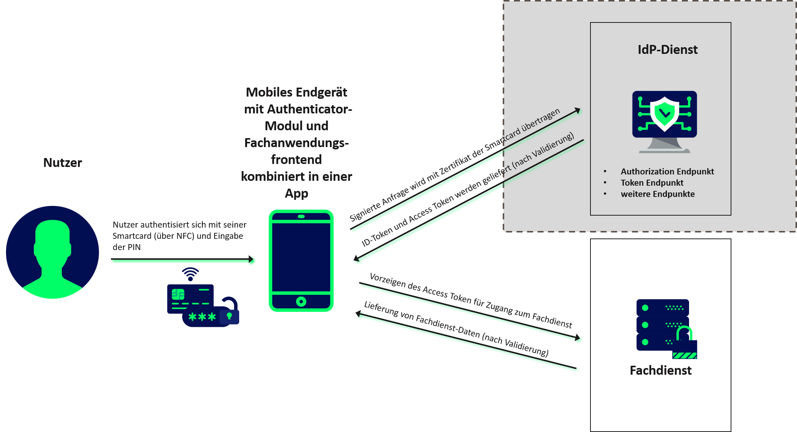
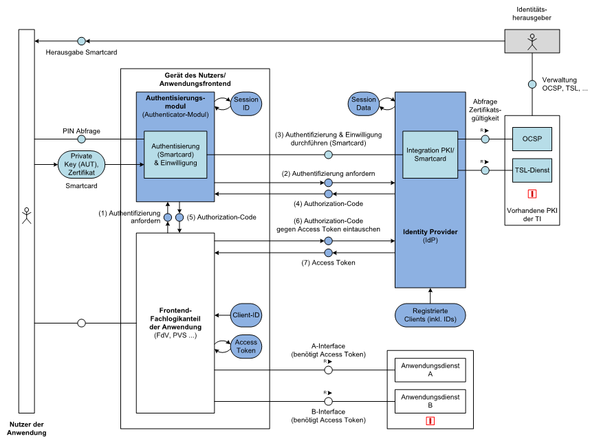
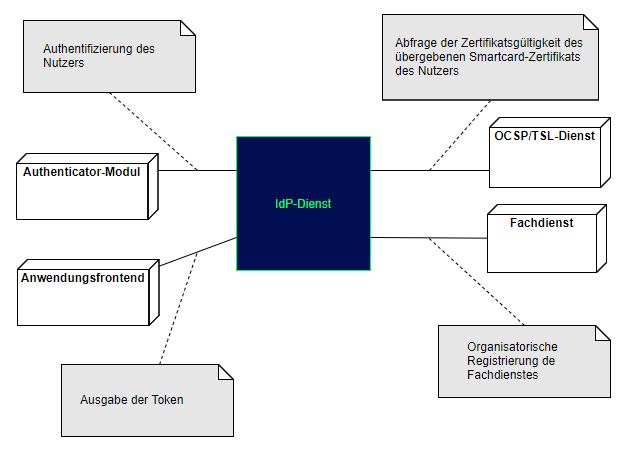
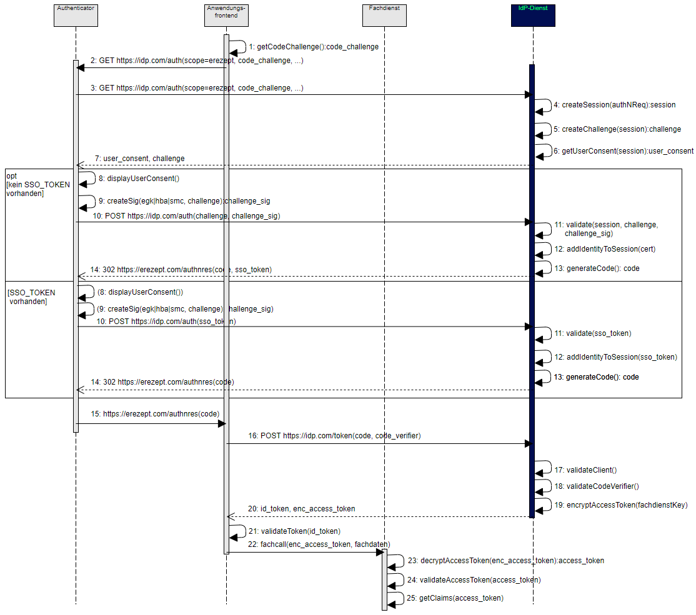
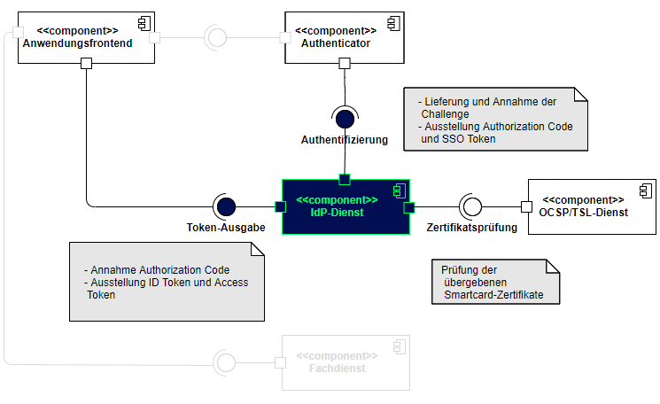
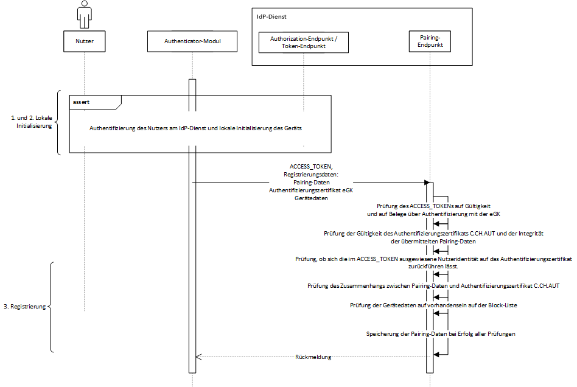
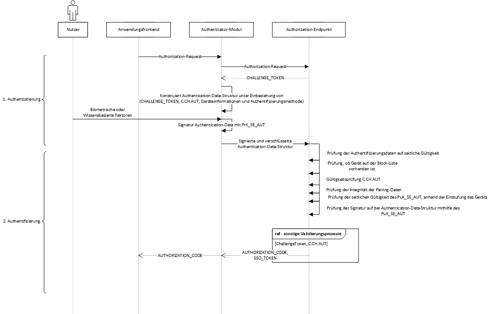
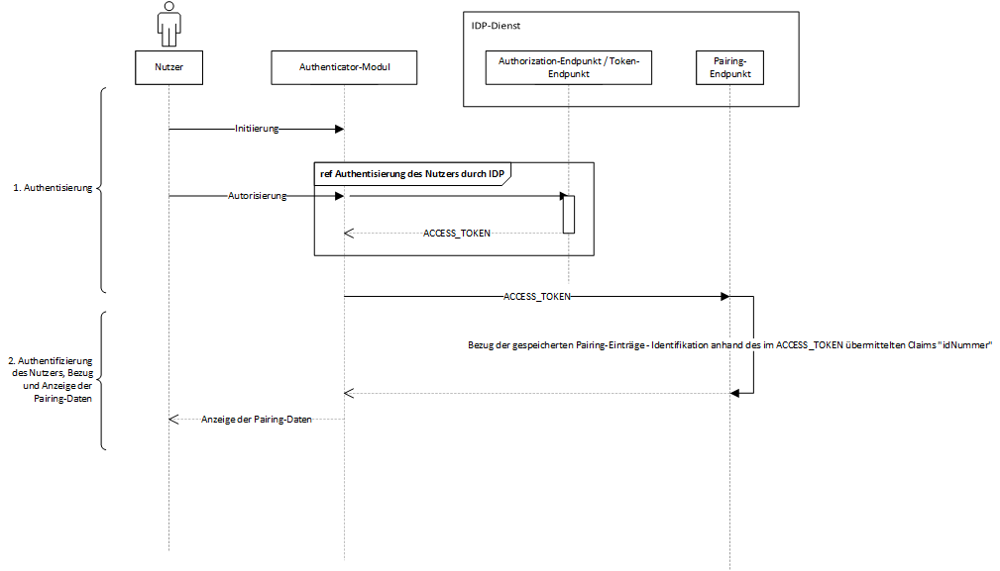
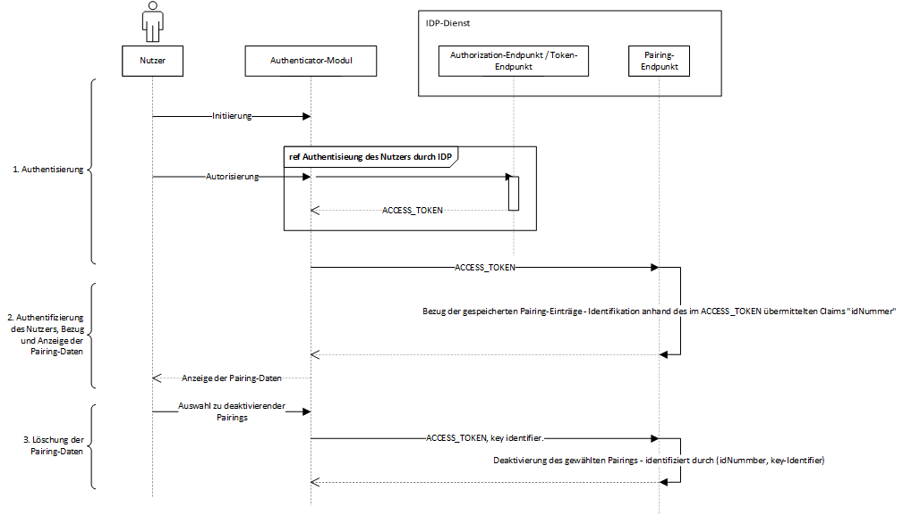

Elektronische Gesundheitskarte und Telematikinfrastruktur
Spezifikation
Identity Provider-Dienst
| Version | 1.4.0 |
| Revision | 581753 |
| Stand | 17.12.2021 |
| Status | in Bearbeitung |
| Klassifizierung | öffentlich |
| Referenzierung | gemSpec_IDP_Dienst |
Änderungen zur Vorversion
Anpassungen des vorliegenden Dokumentes im Vergleich zur Vorversion können Sie der nachfolgenden Tabelle entnehmen.
Dokumentenhistorie
| Version |
Stand |
Kap./ Seite |
Grund der Änderung, besondere Hinweise |
Bearbeitung |
|---|---|---|---|---|
| 1.0.0 | 30.06.20 | initiale Erstellung des Dokuments | gematik | |
| 1.1.0 | 12.10.20 | Einarbeitung Scope-Themen aus R4.0.1 | gematik | |
| 1.1.1 | 13.11.20 | Einarbeitung P22.4 | gematik | |
| 1.2.0 | 19.02.21 | Einarbeitung P22.5 | gematik | |
| 1.3.0 | 14.06.21 | Einarbeitung IDP 2.2.0 (inkl. entsprechender Anteile aus gemF_Tokenverschlüsselung & gemF_Biometrie) und der Änderungsliste IdP_Maintenance_21.1 | gematik | |
| 1.4.0 | 17.12.21 | Einarbeitung IDP 2.3.0 (inkl. entsprechender Anteile aus gemF_sektorale_IDP) und der Änderungsliste IdP_CR_Q4 | gematik |
Die vorliegende Spezifikation definiert die Anforderungen zu Herstellung, Test und Betrieb des Produkttyps Identity Provider (IDP)-Dienst. Der IDP-Dienst basiert auf den Standards OpenID Connect (OIDC), Open Authorization 2.0 (OAuth 2) und JSON Web Token (JWT). Die hier beschriebenen Schnittstellen werden vom Authenticator-Modul und vom Anwendungsfrontend für eine Authentifizierung eines Nutzers anhand einer Smartcard genutzt. Diese Authentifikation ist die Voraussetzung, damit ein Anwendungsfrontend Zugang zu Fachdaten eines Fachdienstes erlangen kann. Der IDP-Dienst verwaltet und steuert den Authentifizierungsprozess für das E-Rezept und perspektivisch auch für weitere Anwendungen.
Das Dokument richtet sich an Hersteller und Anbieter von Identity Providern, welche die Funktionen des IDP-Dienstes der gematik realisieren wollen.
Dieses Dokument enthält normative Festlegungen zur Telematikinfrastruktur (TI) des deutschen Gesundheitswesens. Der Gültigkeitszeitraum der vorliegenden Version und deren Anwendung in Zulassungs- oder Abnahmeverfahren wird durch die gematik GmbH in gesonderten Dokumenten (z.B. Dokumentenlandkarte, Produkttypsteckbrief, Leistungsbeschreibung) festgelegt und bekannt gegeben.
Schutzrechts-/Patentrechtshinweis
Die nachfolgende Spezifikation ist von der gematik allein unter technischen Gesichtspunkten erstellt worden. Im Einzelfall kann nicht ausgeschlossen werden, dass die Implementierung der Spezifikation in technische Schutzrechte Dritter eingreift. Es ist allein Sache des Anbieters oder Herstellers, durch geeignete Maßnahmen dafür Sorge zu tragen, dass von ihm aufgrund der Spezifikation angebotene Produkte und/oder Leistungen nicht gegen Schutzrechte Dritter verstoßen und sich ggf. die erforderlichen Erlaubnisse/Lizenzen von den betroffenen Schutzrechtsinhabern einzuholen. Die gematik GmbH übernimmt insofern keinerlei Gewährleistungen.
Nicht Bestandteil des vorliegenden Dokumentes sind die Verfahrensschritte zur Erstellung des notwendigen Schlüsselmaterials. Es wird angenommen, dass Fachdienste ihre innerhalb der TI zu verwendenden Zertifikate für die Transport Layer Security (TLS)-Sicherung über zentrale Plattformdienste der TI beziehen und diese dort auch geprüft werden können. Außerhalb des TI Netzes können TLS-Zertifikate von den Mitgliedern des CA/Browser Forum als übliche Anbieter solcher Zertifikate bezogen werden. Diese sind über Standardmechanismen prüfbar und erfordern keine besondere Behandlung der PKI. Wenn notwendig werden weitere Schutzmechanismen wie Zertifikat-Pinning, Certification Authority Authorization (CAA) Records oder ein Monitoring mittels Certificate Transparency (CT) vorgesehen.
Als Umsetzungsleitlinie ist [OpenID Connect Core 1.0] heranzuziehen. Die TI-weit übergreifenden Festlegungen – insbesondere aus Dokumenten wie beispielsweise [gemSpec_Krypt] bezüglich Algorithmen und Schlüsselstärken sowie [gemSpec_PKI] bezüglich zu verwendender Zertifikatstypen und deren Attributausprägungen – haben Bestand, sind weiterhin bindend und werden nicht in diesem Dokument beschrieben.
Anforderungen als Ausdruck normativer Festlegungen werden durch eine eindeutige ID in eckigen Klammern sowie die dem RFC 2119 [RFC2119] entsprechenden, in Großbuchstaben geschriebenen deutschen Schlüsselworte MUSS, DARF NICHT, SOLL, SOLL NICHT, KANN gekennzeichnet.
Sie werden im Dokument wie folgt dargestellt:
<AFO-ID> - <Titel der Afo>
Text / Beschreibung
[<=]
Dabei umfasst die Anforderung sämtliche zwischen Afo-ID und der Textmarke [<=] angeführten Inhalte.
Hinweise auf offene Punkte
| Offene Punkten werden im Dokument in dieser Darstellung ausgewiesen. |
Im Rahmen der kontinuierlichen Erweiterung der Vorgaben für Identity Provider innerhalb der TI werden die Vorgaben weiter angepasst werden. Dies beinhaltet Festlegungen zur Einführung föderierter Identity Provider, die Unterstützung weiterer Anwendungen und Nutzungsszenarien, Vorgaben für zulässige Authentisierungsverfahren, Schnittstellen für die Inter-App-Kommunikation zu einer getrennten Authenticator-Anwendung sowie die mögliche Einführung weiterer Endpunkte entsprechend [openid-connect-core].
In der Telematikinfrastruktur werden zahlreiche Fachdienste angeboten. Anwendungsfrontends können über die Authentifizierung des Nutzers am IDP-Dienst Zugriff zu den von den Fachdiensten angebotenen Daten erhalten. Der IDP-Dienst stellt durch gesicherte JSON Web Token (JWT) attestierte Identitäten aus. Gegen Vorlage eines ACCESS_TOKEN erhalten Anwendungsfrontends – entsprechend der im Token attestierten professionOID – Zugriff auf die Inhalte der Fachdienste.

Abbildung 1: Systemüberblick (vereinfacht)
Die obige Abbildung stellt den Systemüberblick dar. Der Authentifizierungsprozess, welcher mit der Ausstellung und Übergabe der Token an das Anwendungsfrontend endet, wird dabei zur besseren Übersicht vereinfacht dargestellt.
Der IDP-Dienst übernimmt für den Fachdienst die Aufgabe der Identifikation des Nutzers. Der IDP-Dienst fasst die professionOID sowie weitere für den Fachdienst notwendige Attribute in signierten JSON Web Token (ID_TOKEN, ACCESS_TOKEN und SSO_TOKEN) zusammen. Fachdienste müssen keine Überprüfung des Nutzers selbst implementieren, sondern können sich darauf verlassen, dass der Besitzer des bei ihnen vorgetragenen ACCESS_TOKEN bereits identifiziert wurde. Des Weiteren stellt der IDP-Dienst sicher, dass die vom Nutzer vorgetragenen Attribute (aus dem Signaturzertifikat) gültig sind.
Der IDP-Dienst prüft, ob das vorgetragene X.509-nonQES-Signatur-Zertifikat der verwendeten Prozessor-Chipkarte (eGK, HBA oder SMC-B) für die vorgesehene Laufzeit des Tokens zeitlich gültig und ob dessen Integrität sichergestellt ist.
Der IDP-Dienst stellt nur solche ACCESS_TOKEN aus, welche auf gültigen AUT-Zertifikaten (d.h. C.CH.AUT, C.HP.AUT oder C.HCI.AUT) basieren.
Der IDP-Dienst führt die Identifikation des Nutzers durch und stattet diesen mit einem ID_TOKEN gemäß [openid-connect-core 1.0 # IDToken], einem ACCESS_TOKEN gemäß [RFC6749 # section-1.4] und einem SSO_TOKEN basierend auf [RFC7519] aus. Gewählt wird aus Sicherheitsaspekten der Authorization Code Grant gemäß [RFC6749 # section-4.1]. Die Verwendung von PKCE (Proof Key for Code Exchange by OAuth Public Clients) gemäß [RFC7636] wird gefordert.
Der IDP-Dienst teilt sich in mehrere Teildienste auf. Einzelne Teildienste werden zentral und bei Bedarf auf unterschiedlicher Hardware verteilt betrieben. Das Authenticator-Modul wird grundsätzlich auf dezentraler Hardware zusammen mit dem Primärsystem oder auf dem mobilen Endgerät des Nutzers betrieben. Der IDP-Dienst stellt unterschiedliche Endpunkte bereit, welche eine statische IP-Adressierung und somit statische URI besitzen. Diese statisch adressierten Endpunkte umfassen:
Im folgenden Schaubild sind die vom IDP-Dienst bereitgestellten Teildienste blau hinterlegt.
Teildienste wie das Authenticator-Modul und das Anwendungsfrontend befinden sich in dem mit "Gerät des Nutzers" bezeichneten Bereich.
Fachdienste sind nicht näher bestimmt und befinden sich im Block unterhalb des Identity Providers.

Abbildung 2: Übersichtsschaubild OAuth2.0 Smartcard-IDP-Dienst
Erläuterungen zur obigen Abbildung:
Die Teilschritte (1) und (5) werden bei mobilen Endgeräten (FdV) via Redirection-Endpunkt [RFC6749 # section-3.1.2] realisiert.
Die Teilschritte (1) und (5) können bei Primärsystemen (PVS, AVS, KVS) abweichend von [RFC6749 # section-9] behandelt werden.
Die Teilschritte (2) und (4) werden durch den Authorization-Endpunkt gemäß [RFC6749 # section-3.1] bedient.
Der Teilschritt (3) Challenge-Response wird durch den Authorization-Endpunkt bedient.
Die Teilschritte (6) und (7) werden durch den Token-Endpunkt [RFC6749 # section-3.2] bedient.
Der hier gezeigte Smartcard-IDP-Dienst stellt eine Basisleistung innerhalb der TI dar und soll die sichere Identifikation der Akteure anhand der ihnen bereitgestellten Identifikationsmittel (Smartcards) ermöglichen. Der Standard lässt hierbei die Einbringung weiterer Identity Provider für unterschiedlichste Identifikationsverfahren zu, ohne dass Fachdienste hierfür eine Änderung der Zugangsmechanismen realisieren müssen.
Die Umsetzung basiert grundsätzlich auf [OpenID Connect Core v1.0] und [OpenID Connect Discovery v1.0].
Weitere zu beachtende Standards sind die folgenden:
Request for Comments JWT (JSON Web Token) [RFC7519 ], JWS (JSON Web Signature) [RFC7515 ], JWE (JSON Web Encryption) [RFC7516 ], JWK (JSON Web Key) [RFC7517 ], JWA (JSON Web Algorithm) [RFC7518] und WebFinger [RFC7033] sowie OAuth 2.0 Bearer [RFC6750], OAuth 2.0 Assertion [RFC7521], OAuth 2.0 JWT Profile [RFC7523], OAuth 2.0 Responses [RFC6749 ].
Die Gesamtliste der referenzierten Standards finden sich im Abschnitt .
Die untere Abbildung beschreibt den Systemkontext aus Sicht des IDP-Dienstes. Das Authenticator-Modul liefert die Daten zur Authentifizierung des Nutzers an den IDP-Dienst. Bei positiver Validierung – gegen den OCSP/TSL-Dienst der Public Key Infrastructure (PKI) der gematik – liefert der IDP-Dienst einen AUTHORIZATION_CODE zurück. Der IDP-Dienst liefert ebenso einen SSO_TOKEN, wodurch das Authenticator-Modul einen weiteren AUTHORIZATION_CODE ohne erneute Nutzerauthentifizierung erhalten kann.
Das Anwendungsfrontend registriert sich innerhalb eines organisatorischen Prozesses am IDP-Dienst. Das Anwendungsfrontend erlangt gegen Vorlage des AUTHORIZATION_CODE einen ID_TOKEN und einen ACCESS_TOKEN. Das Anwendungsfrontend erhält gegen Vorlage des ACCESS_TOKEN Zugang zu den Fachdaten des Fachdienstes.
Der Fachdienst registriert sich am IDP-Dienst in Form eines organisatorischen Prozesses.

Abbildung 3: Systemkontext aus Sicht des IDP-Dienstes
Im Systemkontext des IDP-Dienstes interagieren verschiedene Akteure (Nutzer und aktive Komponenten) in unterschiedlichen OAuth2-Rollen gemäß [RFC6749 # section-1.1].
Tabelle 1: TAB_IDP_DIENST_0001 Akteure und OAuth2-Rollen
| Akteur | OAuth2-Rolle |
|---|---|
| Nutzer | Resource Owner |
| Fachdienst | Resource Server |
| Anwendungsfrontend | Teil des Clients |
| Authenticator-Modul | Teil des Clients |
| IDP-Dienst | Authorization Server |
| Fachdaten | Protected Resource |
Nutzer (Rolle: Resource Owner)
Der Resource Owner ist der Nutzer, welcher auf die beim Fachdienst (Resource Server) für ihn bereitgestellten Daten (Protected Resource) zugreift.
Der Resource Owner verfügt über die folgenden Komponenten:
· Endgerät des Nutzers
· Authenticator-Modul
· Anwendungsfrontend
Fachdienst (Rolle: Resource Server)
Der Resource Server ist der Fachdienst, der dem Nutzer (Resource Owner) Zugriff auf seine Fachdaten (Protected Resource) gewährt. Der Fachdienst, der die geschützten Fachdaten (Protected Resources) anbietet, ist in der Lage, auf Basis von ACCESS_TOKEN Zugriff für Clients zu gewähren. Ein solches Token repräsentiert die delegierte Identifikation des Resource Owners.
Anwendungsfrontend/Authenticator-Modul kombiniert in einer Applikation (Rolle: Client)
Der Client greift mit dem Authenticator-Modul und dem Anwendungsfrontend (OIDC Relying Party bzw. OAuth2 Client) auf Fachdienste (Resource Server) und ihre geschützten Fachdaten (Protected Resource) zu. Das Anwendungsfrontend kann auf einem Server als Webanwendung (Primärsystem als Terminalserver), auf einem Desktop-PC oder einem mobilen Gerät (z.B. Smartphone) ausgeführt werden.
IDP-Dienst (Rolle: Authorization Server)
Der Authorization Server authentifiziert den Resource Owner (Nutzer) und stellt ID_TOKEN, ACCESS_TOKEN und SSO_TOKEN für den vom Resource Owner erlaubten Anwendungsbereich (SCOPE) aus, welche dieser wiederum beim Fachdienst einreicht.
Tabelle 2: TAB_IDP_DIENST_0002 Kurzbezeichnung der Schnittstellen des IDP-Dienstes
| Kurzzeichen | Schnittstelle |
|---|---|
| AUTH | Authorization-Endpunkt |
| TOKEN | Token-Endpunkt |
| REDIR | Redirection-Endpunkt |
| DD | Discovery Document-Endpunkt |
Weitere Akteure im Kontext IDP-Dienst sind:
Fachdaten (Rolle: Protected Resource)
Die geschützten Fachdaten, welche vom Fachdienst (Resource Server) angeboten werden.
Die folgende Tabelle enthält die Abkürzungen (für die privaten Schlüssel PrK und für öffentliche Schlüssel PUK) der verschiedenen Endpunkte des IDP-Dienstes und deren Verwendung.
Tabelle 3: TAB_IDP_DIENST_0003 Bezeichnungen der extern genutzten Schlüssel und Adressen des IDP-Dienstes
|
|
PUK
|
private Key
|
URI Dienst
|
|---|---|---|---|
| Authorization-Endpunkt (AUTH) |
PuK_IDP_SIG - für die Signaturprüfung desCHALLENGE_TOKEN, des AUTHORIZATION_CODE und des SSO_TOKEN - kodiert in einem FD.SIG-Zertifikat PuK_IDP_ENC - für die Verschlüsselung der signierten Challenge durch das Authenticator-Modul |
PrK_IDP_SIG - zum Signieren des CHALLENGE_TOKEN des AUTHORIZATION_CODE und des SSO_TOKEN PrK_IDP_ENC - zum Entschlüsseln der signierten Challenge |
URI_AUTH (authorization_endpoint) URI_AUTH_SSO (sso_endpoint) |
| Discovery-Endpunkt (DISC) |
PuK_DISC_SIG - für die Signaturprüfung des Discovery Document - kodiert in einem FD.SIG-Zertifikat |
PrK_DISC_SIG - zum Signieren des Discovery Document |
URI_DISC |
| Token-Endpunkt (TOKEN) |
PuK_IDP_SIG - für die Signaturprüfung des ID_TOKEN und des ACCESS_TOKEN - kodiert in einem FD.SIG-Zertifikat PuK_IDP_ENC - für die Verschlüsselung des KEY_VERIFIER durch das Anwendungsfrontend |
PrK_IDP_SIG - zum Signieren des ID_TOKEN und des ACCESS_TOKEN PrK_IDP_ENC - für die Entschlüsselung des ACCESS_TOKEN für den Pairing-Vorgang |
URI_TOKEN (token_endpoint) |
| Pairing-Endpunkt (PAIR) | PuK_IDP_ENC - für die Verschlüsselung des ACCESS_TOKEN für den Pairing-Vorgang |
PrK_IDP_ENC - für die Entschlüsselung des ACCESS_TOKEN für den Pairing-Vorgang |
URI_PAIR |
Hinweis: Werden alle Teildienste auf einem Server gemeinsam betrieben, so können diese dasselbe Schlüsselmaterial verwenden. Werden Teildienste auf unterschiedlichen physischen oder logischen Servern betrieben, so sind die Endpunkte mit eigenem Schlüsselmaterial auszustatten.
Die URL des Discovery Document URI_DISC stellt somit den zentralen Anlaufpunkt dar, anhand dessen alle weiteren „statischen“ Dienste (Endpunkte des IDP-Dienstes) adressiert werden können.
Hinweis: Bei allen extern genutzten Schlüsseln handelt es sich um ECC-Schlüsselpaare der Kurve brainpoolP256r1. Für IDP_ENC ist im Gegensatz zu den anderen beiden Schlüsseln keine Bestätigung als Zertifikat vorgesehen. Die maximale Einsatzdauer des Schlüsselpaares liegt analog zum IDP_SIG und DISC_SIG bei maximal 5 Jahren.
Vorbereitende Maßnahmen: Das Anwendungsfrontend und der Fachdienst haben sich im Zuge eines organisatorischen Prozesses beim IDP-Dienst registriert. Das Anwendungsfrontend und das Authenticator-Modul haben das Discovery Dokument eingelesen und kennen damit die Uniform Resource Identifier (URI) und die öffentlichen Schlüssel der vom IDP-Dienst angebotenen Endpunkte. Der Fachdienst hat bei der Registrierung am IDP-Dienst seinen öffentlichen Schlüssel hinterlegt.

Abbildung 4: Datenfluss-Diagramm IDP-Dienst
Die Prozessschritte, welche notwendig sind, damit ein mobiles Anwendungsfrontend einen Token erhält sind:
Hinweis: Verwendet der Nutzer ein Primärsystem, führt der Konnektor in Schritt 9 die Funktion "externalAuthenticate" für eine Signatur mit der SMC-B durch. Setzt der Nutzer ein mobiles Endgerät ein, ruft das Authenticator-Modul die Signaturfunktion eines HBA oder einer eGK für eine nonQES-Signatur der Smartcard auf. Die erforderlichen Token in Schritt 19 sind ID_TOKEN und ACCESS_TOKEN. Das Authenticator-Modul kann mit dem SSO_TOKEN einen neuen AUTHORIZATION_CODE beim IDP-Dienst ohne erneute Nutzer-Authentifizierung anfordern und damit ein neues ACCESS_TOKEN vom IDP-Dienst erhalten. Im SSO_TOKEN hinterlegt der IDP-Dienst die für ihn selbst bestimmten Informationen zum gesamten Vorgang, sodass er keine schützenswerten Informationen zentral speichern muss. Das SSO_TOKEN beinhaltet alle Daten, die beim IDP-Dienst benötigt werden, um auf die Vorgangshistorie zurückzugreifen und ggf. neue ACCESS_TOKEN herauszugeben. Die Informationen im SSO_TOKEN sind mit dem öffentlichen Schlüssel des Authorization-Servers für diesen selbst verschlüsselt und können ausschließlich mit dem privaten Schlüssel des Authorization Servers wieder entschlüsselt werden.
Im Schaubild Datenflussdiagramm IDP-Dienst oben ist der Datenfluss zwischen Anwendungsfrontend, Authenticator-Modul, IDP-Dienst und Fachdienst dargestellt. Der Datenfluss weicht im Falle von Primärsystemen hiervon ab, wenngleich Primärsysteme ebenfalls Nutzer-Endgeräte sind. Die Abweichung des Datenflusses wird im nächsten Kapitel erläutert.
Da bei Primärsystemen der Zugriff auf das Authenticator-Modul nicht in allen Fällen in Form eines Links innerhalb des Systems erfolgen kann, muss von der Vorgehensweise für mobile Endgeräte des Nutzers abgewichen werden. Das Primärsystem hat nicht die Möglichkeit, die Anfrage zum freizugebenden Consent anzuzeigen und nicht zur Eingabe der PIN aufzufordern. Zum Betrieb des Primärsystems ist es notwendig, dass sich die SMC-B im freigeschalteten Modus befindet. Damit muss die Freischaltung der SMC-B genutzt werden, um die Consent-Freigabe dauerhaft zu bestätigen und die vom IDP-Dienst in Schritt 6 geforderte Challenge ohne PIN-Eingabe zu realisieren.
Für die Signatur der Challenge wird die Funktion "externalAuthenticate" des Konnektors verwendet, welcher diesen Funktionsaufruf nur von den Primärsystemen entgegennimmt, an welchen ein Mitarbeiter der Praxis aktiv eingeloggt ist.
A_20737
Der Anbieter des IdP-Dienstes MUSS eine organisatorische Registrierung von Anwendungsfrontends und Fachdiensten ermöglichen. <=
Um ein Anwendungsfrontend nutzen zu können, muss dieses gemeinsam mit einem Authenticator-Modul in einer Applikation kombiniert und am IDP-Dienst registriert sein. Die Registrierung des Anwendungsfrontends ist im Dokument [gemSpec_IDP_Frontend] beschrieben.
Anbieter von Fachdiensten müssen Ihre Fachdienste über einen organisatorischen Prozess am IDP-Dienst durchführen.
Ergänzung: Diese Registrierung erfolgt einmalig für die Anwendung bzw. den Dienst und muss nicht bei Updates wiederholt werden. Die Registrierung des Fachdienstes beinhaltet dabei auch die Abstimmung der Claims und die Gültigkeitsdauer der erstellten Token (siehe [gemSpec_IDP_FD#Kapitel 4]), wobei der Fachdienst seinen Bedarf an den gewünschten Attributen erklärt. Anpassungen an den Claims bedürfen einer erneuten Abstimmung und Registrierung.
Das Anwendungsfrontend muss ein CODE_VERIFIER (Zufallswert) gemäß [RFC7636 # section-4.1] und hierüber einen Hash, die CODE_CHALLENGE, gemäß [RFC7636 # section-4.2] mit dem Algorithmus S256 gemäß [RFC7636 # section-4.2] erzeugen.
Die folgende Anfrage an den Authorization-Endpunkt umfasst die Schritte 1-3 aus dem Gesamtablauf des Kapitels 3.2. Der Nutzer ruft sein Anwendungsfrontend auf. Die Adressierung des IDP-Dienstes ist im Anwendungsfrontend als Parameter in einer Konfigurationsdatei oder direkt im Quellcode hinterlegt.
Das Anwendungsfrontend liefert seine Anfrage auf ein ACCESS_TOKEN über das Authenticator-Modul an den Authorization-Endpunkt.
Inhalt der Anfrage ist:
Der Authorization-Endpunkt nimmt die Anfrage an und entschlüsselt diese mit seinem privaten Schlüssel PRK_AUTH. Nach der Signatur- und Integritätsprüfung überprüft der Authorization-Endpunkt, ob mit den Attributen in der ACCESS_TOKEN-Anfrage die im Claim des Fachdienstes geforderten Parameter bedient werden können.
Kann das Claim nicht voll bedient werden, gibt der Authorization-Endpunkt eine Fehlermeldung gemäß [RFC6749 # section-5.2] und fordert den Nutzer zur erneuten Authentisierung und Freigabe der erforderlichen Attribute auf.
Sind alle im Claim geforderten Attribute vorhanden und die Gültigkeit der Attribute geprüft, erstellt der Authorization-Endpunkt einen AUTHORIZATION_CODE und sendet diesen an das Anwendungsfrontend. Der Authorization-Endpunkt prüft die Signatur der CHALLENGE und das mitgelieferte Zertifikat der Smartcard des Nutzers gegen den OCSP/TSL-Dienst der PKI der gematik.
Das Anwendungsfrontend reicht den AUTHORIZATION_CODE zusammen mit dem CODE_VERIFIER beim Token-Endpunkt ein.
Der Token-Endpunkt des IDP-Dienstes nimmt die Daten des Anwendungsfrontends entgegen und prüft neben deren Integrität, ob der eingereichte CODE_VERIFIER bei Nutzung des Hash-Verfahrens S256 (nach [RFC7636 # section-4.2]) zum bitgleichen Hash-Wert führt. Stimmt der Hash-Wert aus dem initialen Aufruf des Authenticator-Moduls - die CODE_CHALLENGE - mit dem gebildeten Hash-Wert überein, ist sichergestellt, dass Aufrufer und Initiator identisch sind. Der Token-Endpunkt gibt daraufhin das ID_TOKEN und das ACCESS_TOKEN an das Anwendungsfrontend heraus.
Um schlussendlich Zugriff auf den Fachdienst zu bekommen, reicht das Anwendungsfrontend das ACCESS_TOKEN beim Fachdienst ein.
Der Fachdienst nimmt das zwischen Frontend und Fachdienst anwendungsspezifisch verschlüsselte ACCESS_TOKEN entgegen. Der Fachdienst muss das ACCESS_TOKEN mit seinem privaten Schlüssel PrK_FD entschlüsseln. Danach überprüft er die Integrität und die Übereinstimmung mit dem eigenen Claim. Enthält das ACCESS_TOKEN mehr oder weniger Attribute, als im Claim vereinbart, oder sind diese fehlerhaft oder nicht befüllt, stimmt die Integrität oder Signatur des ACCESS_TOKEN nicht oder ist das ACCESS_TOKEN zeitlich nicht mehr gültig, bricht der Fachdienst die Kommunikation mit einer dem Abbruchgrund entsprechenden Fehlermeldung ab.
Bei positiver Validierung gewährt der Fachdienst Zugriff auf seine Fachdaten.
A_20687-01
Der Authorization Server MUSS zu allen verwendeten privaten Schlüsseln PrK_IDP_SIG, PrK_IDP_ENC und PrK_DISC_SIG das öffentliche Pendant PuK_IDP_SIG, PuK_IDP_ENC und PuK_DISC_SIG zum Download bereitstellen. Dies ermöglicht die Prüfung der von den einzelnen Schnittstellen vorgenommenen Signaturen ebenso wie die zielgerichtete Verschlüsselung des Payload für den bestimmten Empfänger. <=
Der Produkttyp besteht aus einer zentralen Komponente (IDP-Dienst). Diese wird bei der Durchführung des Authentifizierungsprozesses vom Authenticator-Modul unterstützt. Das Authenticator-Modul übernimmt die Ausführung der Nutzerauthentisierung. Bei Verwendung eines stationären Endgerätes mit installiertem Primärsystem, realisiert das Primärsystem die Funktionalität des Authenticator-Moduls. Das Anwendungsfrontend ist ebenso als Teil des Primärsystems realisiert. Bei Verwendung eines mobilen Endgeräts, ist dort sowohl das Authenticator-Modul, als auch das Anwendungsfrontend gemeinsam in einer Applikation installiert.
Der IDP-Dienst stellt die zentralisierte Identitätsprüfung der auf die Fachdienste zugreifenden Nutzer bereit. Als weitere Teile der Gesamtlösung sind neben dem IDP-Dienst die Clients (Anwendungsfrontend/Primärsystem) und die Fachdienste zu nennen, auf denen Fachdaten für den Zugriff durch die Nutzer (z. B. Versicherte oder Bediener eines AVS, PVS oder KVS) bereitgestellt werden. Ein IDP-Dienst bietet Fachdiensten seine Dienste an, auf welche Millionen Nutzer zeitgleich zugreifen. Eine wesentliche Ergänzung des IDP-Dienstes ist das Authenticator-Modul, welches auf den dezentralen Komponenten in den Praxen, Kliniken, Apotheken und bei den Versicherten betrieben wird.
Hinweis: Die Bereitstellung von öffentlichem Schlüsselmaterial bezieht sich auf die Schlüssel zum Signieren und ggf. Verschlüsseln der JSON Web Token. Hiermit sind nicht die öffentlichen Schlüssel der TLS-Verschlüsselung gemeint.
A_20732
Der Authorization Server MUSS zu jedem privaten Schlüssel dessen öffentlichen Teil mit einer eigenen absoluten URI in das Discovery Document aufnehmen. <=
A_20686
Der Authorization Server MUSS die einzelnen Schnittstellen (AUTH, DISC, TOKEN) mit getrennten Interfaces bedienen. <=
A_20582-01
Der IdP-Dienst MUSS Maßnahmen zum Schutz sowohl vor den zum Zulassungszeitpunkt aktuellen OWASP-Top-10-Risiken umsetzen, als auch nach den zum Zulassungszeitpunkt aktuellen OWASP-Top-10-Risiken. <=
A_21302
Der Anbieter des IdP-Dienstes MUSS für den internen Datenaustausch einen Mechanismus zur Sicherung der Datenintegrität, der Authentizität und zur Vertraulichkeit der Daten zur Verfügung stellen. <=
A_20583
Der Anbieter des IdP-Dienstes MUSS dafür sorgen, dass das Transportnetz Internet durch einen Paketfilter (ACL) gesichert wird und ausschließlich die erforderlichen Protokolle weiterleitet. Der Anbieter des IdP-Dienstes MUSS dafür sorgen, dass der Paketfilter des IdP-Dienstes frei konfigurierbar auf der Grundlage von Informationen aus OSI-Layer 3 und 4 ist, das heißt Quell- und Zieladresse, IP-Protokoll sowie Quell- und Zielport. <=
Der IDP-Dienst wird für Versicherte über das Internet erreichbar gemacht und für Leistungserbringer über das Netz der TI. Die folgenden Anforderungen beschreiben die für diese Netzübergänge erforderlichen Sicherheitsmechanismen. Für den Netzübergang aus dem Internet als Transportnetz zum IDP-Dienst ist ein Paketfilter erforderlich.
Hinweis: Durch die Zurückweisung von Verbindungen wird sichergestellt, dass Clients einen Verbindungsaufbau mit einer anderen Instanz des Fachdienstes versuchen, bei dem die erforderlichen Ressourcen zur Verfügung stehen.
A_20584
Der Anbieter des IdP-Dienstes DARF den Paketfilter des IdP-Dienstes zum Schutz in Richtung Transportnetz Internet NICHT physisch auf dem vorgeschalteten TLS-terminierenden Load Balancer implementieren. <=
A_20585-01
Der Anbieter des IdP-Dienstes MUSS beim Paketfilter die Weiterleitung von IP-Paketen an der Schnittstelle zum Internet auf das HTTPS- Protokoll beschränken. <=
A_20586-01
Der Anbieter des IdP-Dienstes MUSS den Paketfilter des IdP-Dienstes so konfigurieren, dass bei Vollauslastung der Systemressourcen im IdP-Dienst keine weiteren Verbindungen angenommen werden. <=
A_20587
Der Anbieter des IdP-Dienstes MUSS dafür sorgen, dass der Eingangspunkt des IdP-Dienstes sich beim TLS-Verbindungsaufbau über das Transportnetz gegenüber dem Client mit einem Extended Validation TLS-Zertifikat eines Herausgebers gemäß [CAB-Forum] authentisiert. Der Anbieter MUSS dafür sorgen, dass das Zertifikat sich an die jeweilige Schnittstelle des Eingangspunkts für Primärsysteme, Authenticator-Module und Frontends der Versicherten des IdP-Dienstes bindet, damit Clientsysteme beim TLS-Verbindungsaufbau eine vereinfachte Zertifikatsprüfung mit TLS-Standardbibliotheken durchführen können. <=
A_20680
Der IdP-Dienst MUSS für die verschiedenen Teilfunktionen geeignete Fehlermeldungen erzeugen und diese an den jeweiligen Aufrufer übergeben. <=
A_20681
Der IdP-Dienst MUSS Fehler durch eine eindeutige Nummer erkennbar machen und der gematik eine Liste der Error-Codes zur Verfügung stellen, damit die Ursachenklärung vereinfacht möglich wird. <=
A_20682-01
Der IdP-Dienst MUSS alle ausgeworfenen Fehlermeldungen zur Weiterverarbeitung in einem einheitlichen Schema aufbereiten und bereitstellen. Zeitstempel MÜSSEN auf der UTC basieren.
<=A_20683
Der IdP-Dienst MUSS Fehlermeldungen, welche dem Nutzer angezeigt werden, in der Art ausformulieren, dass es dem Nutzer möglich ist, eigenes Fehlverhalten anhand der Fehlermeldung abzustellen. <=
A_20684
Der IdP-Dienst MUSS jedem Fehler eine eindeutige eigene Beschreibung zukommen lassen, sodass eine Fehlermeldung nicht für unterschiedliche Fehlerursachen zur Anwendung kommt. <=
A_20685
Der IdP-Dienst MUSS aufeinander aufbauende Fehlermeldungen in der umgekehrten Reihenfolge ihres Auftretens "Traceback (most recent call last)" ausgeben. <=
Der IDP-Dienst bietet zahlreiche Schnittstellen gegenüber unterschiedlichen Akteuren inner- und außerhalb der TI an, weswegen es notwendig ist, die einzelnen Schnittstellen so zu beschreiben, dass andere Akteure deren Funktionsweise leichter verstehen können. Nachfolgende Abbildung skizziert die Schnittstellen des IDP-Dienstes. Komponenten und Schnittstellen, welche nicht direkt vom IDP-Dienst genutzt werden, sind in der Abbildung grau hinterlegt.

Abbildung 5: Schnittstellen des IDP-Dienstes
Die erste tokenbezogene Anfrage an den Authorization Server des IDP-Dienstes geht am Authorization-Endpunkt [RFC6749 # section-3.1] ein. Das Authenticator-Modul reicht dort am Endpunkt den CONSENT mit der CHALLENGE ein, mit welchem die TOKEN erstellt werden sollen, und erhält den AUTHORIZATION_CODE zurück, falls die Prüfung der signierten CHALLENGE und die Prüfung des übergebenen Smartcard-Zertifikats am OCSP/TSL-Dienst positiv ausfallen. Das Anwendungsfrontend reicht den AUTHORIZATION_CODE am Token-Endpunkt [RFC6749 # section-3.2] des IDP-Dienstes ein. Der IDP-Dienst überprüft den AUTHORIZATION_CODE und stellt bei positiver Validierung einen ID_TOKEN und einen ACCESS_TOKEN aus.
Bei der ersten Kontaktaufnahme erzeugt der Authorization Server die SUBJECT_SESSION, welche im weiteren Verlauf als Zeitpunkt der letzten Authentisierung gegen die eGK oder den HBA gewertet wird. Basierend darauf dürfen weitere ACCESS_TOKEN und SSO_TOKEN für andere Anwendungsfrontends und Fachdienste ausgegeben werden, wenn das jeweils vorliegende Claim durch die dem Authorization Server vorliegenden Informationen bedient werden kann. Ist der Zeitpunkt der letzten Authentisierung zu lange her oder wird das Authenticator-Modul zum ersten Mal gestartet, muss eine Authentisierung erfolgen.
Hinweise für die Implementierung der Authentifizierung für Primärsystemen werden in [gemILF_PS_eRp] beschrieben.
Der Vorgang der Authentifizierung gegen die eGK oder den HBA ist nicht Bestandteil dieser Spezifikation, sondern ist im gesonderten Dokument [gemSpec_IDP_Frontend] beschrieben.
A_20588-01
Der IdP-Dienst MUSS das vom aufrufenden Nutzer verwendete Clientsystem (Authenticator-Modul, E-Rezept-FdV oder Primärsystem) anhand des im HTTP-Request enthaltenen Header-Feld "User-Agent" gemäß [RFC7231] erkennen und in den Einträgen zur Performance-Rohdatenerfassung gemäß [gemSpec_Perf] protokollieren. Der IdP-Dienst MUSS bei fehlendem User-Agent-Header den Request mit dem HTTP-Status-Code 403 beantworten, damit in der Betriebsüberwachung des IdP-Dienstes die Nutzung unzulässiger Clientsysteme erkannt werden kann. <=
Der IDP-Dienst verwaltet und steuert den Authentisierungsprozess für das E-Rezept und perspektivisch auch weitere Anwendungen. Damit kommt ihm eine Relevanz in der Gesundheitsversorgung zu, die sich zum einen in einer hohen Verfügbarkeit und zum anderen in einem hohen Angriffspotential widerspiegelt. Zur Unterstützung der betrieblichen Überwachung des IDP-Dienstes wird die Nutzung der im Feld befindlichen Clientsysteme protokolliert. Dabei ist der Zugriff auf die Schnittstellen des IDP-Dienstes nur durch Primärsysteme der Leistungserbringer, sein eigenes Authenticator-Modul und zugelassene E-Rezept-FdVs zulässig. Der E-Rezept-Fachdienst erkennt die Clientsysteme anhand des User-Agent-Header eingehender HTTP-Requests und protokolliert diesen Wert.
A_20589
Der IdP-Dienst MUSS die aus dem Internet vom Clientsystem mitgeteilte Versionsnummer aus dem HTTP-Header User-Agent, erkennen und festgelegte Versionsnummern über ein Blacklisting von einer Kommunikation mit dem IdP-Dienst ausschließen können. Der IdP-Dienst MUSS in diesen Fällen eine entsprechende Fehlermeldung an das Clientsystem geben. <=
A_20590
Der Anbieter des IdP-Dienstes MUSS ausschließlich auf Anweisung der gematik Clientsysteme mit bestimmten Versionsnummern von einer Kommunikation mit dem IdP-Dienst ausschließen. <=
A_20742-01
Der Anbieter des IDP-Dienstes MUSS bei der organisatorischen Registrierung des Anwendungsfrontends diesem eine eindeutige client_id zur Nutzung des IDP-Dienstes zuweisen. <=
A_21472
Der IDP-Dienst MUSS bei der organisatorischen Registrierung eines Clients anhand seiner client_id - beispielsweise des Anwendungsfrontends oder eines Primärsystems - festlegen, ob im Authorization Code Flow bei der Ausgabe eines AUTHORIZATION_CODE auch ein SSO_TOKEN vom IDP-Dienst ausgegeben werden muss. <=
A_22280
Der Anbieter des IDP-Dienstes MUSS diesen bei allen sektoralen Identity Providern als Confidential Client (gemäß [RFC6749#section-2.1]) registrieren. Hierbei müssen die folgenden Metadaten verwendet werden:
| Datenobjekt | Wert | Anmerkungen |
|---|---|---|
| client_id | "zentraler-idp-dienst" | |
| redirect_uri | URIs, von denen der sektorale Idenitity Provider Authorization Requests entgegennimmt | Der sektorale Identity Provider muss hier den IDP-Dienst mit all jenen "kk_app_redirect_uri"-Adressen registrieren, die er unterstützt. |
| PuK_IDP_SIG_Sek | öffentlicher Authentifizierungsschlüssel des zentralen IDP-Dienstes gegenüber den sektoralen Identity Providern | Mindestens ein Schlüssel ist zu übergeben. |
Im Rahmen der Zugänglichmachung des E-Rezepts für Versicherte ohne NFC-fähige eGK sollen ab dem 01.01.2022 Kassen-eigene Authentifizierungssysteme an das E-Rezept angebunden werden. Diese werden im Folgenden als sektorale Identity Provider bezeichnet, um sie vom zentralen IDP-Dienst abzugrenzen, welcher die Authentisierung der Nutzer direkt oder indirekt über die eGK realisiert und die bereitgestellten Attribute von dieser ableitet.
Zur Einbindung eines sektoralen Identity Provider wird im ersten Schritt der zentrale IDP-Dienst als Mittler zwischen dem Anwendungsfrontend, den sektoralen Identity Providern und dem E-Rezept Fachdient eingesetzt. Die Realisierung der ersten Stufe der sektoralen Identity Provider auf dem Vertrauensniveau "substanziell" wird auf den 31.12.2022 befristet.
Dies wird später mit der Etablierung einer Föderation von Identity Providern abgelöst.
Hinweis: Der sektorale Identity Provider wird bei Zulassung vermerkt und der zentrale IDP-Dienst geht dann im Auftrag der gematik auf diesen zwecks Registrierung zu.
Weitere Aspekte finden sich in den Kapiteln der jeweiligen Endpunkte.
A_22282
Der IDP-Dienst MUSS die Discovery Documents und JWKS-Schlüsselsätze der sektoralen Identity Provider, bei denen er registriert ist, mindestens einmal stündlich aktualisieren.
Erfolgreich eingelesene Discovery Documents und Schlüssel dürfen im Fall einer Nicht-Erreichbarkeit des Downloadpunktes für maximal 24 Stunden verwendet werden. <=
A_20457
Der IdP-Dienst MUSS alle verwendeten Adressen in Form von URL gemäß [RFC1738 ] angeben und in einem Discovery Document gemäß [RFC8414 # section-2] innerhalb der TI und im Internet veröffentlichen. <=
Der Authorization Server dient dazu bestehende Identitäten zu prüfen und das Prüfungsergebnis in einer einheitlichen Form abgestimmt und durch zusätzliche Mechanismen gesichert bereitzustellen. Basis dieser Dienstleistung ist ein vertrauenswürdiges Verzeichnis, aus welchem hervorgeht, an welchen Schnittstellen dieser Dienst oder seine Teildienste erreichbar sind, wie diese Schnittstellen abgesichert sind und woher man die zur Etablierung der gewünschten Sicherheit erforderlichen Materialien beziehen kann. Gemäß dem verwendeten Standard OpenID Connect mit OAuth 2.0 kommen JSON Web Token (JWT), JSON Web Encryption (JWE), JSON Web Signature (JWS) und JSON Web Key (JWK) zum Einsatz.
Um nutzenden Anwendungen eine einheitliche Bezugsquelle für die Adressierung von Schnittstellen zu schaffen, werden die für alle Akteure grundlegenden Schnittstellen im sogenannten Discovery Document zusammengefasst und dort unter der URI_DISC gemäß [RFC8414 "OAuth 2.0 Authorization Server Metadata"] veröffentlicht.
Alle Akteure, welche den IDP-Dienst nutzen wollen, sind angehalten, dieses Discovery Document zu lokalisieren, herunterzuladen, zu prüfen und den Inhalt in den geplanten Betrieb einzubeziehen.
Hinweis 1: Das Discovery Document innerhalb der TI adressiert hierbei die URI der Schnittstellen des IDP-Dienstes innerhalb der TI. Das im Internet bereitgestellte Discovery Document stellt die URI der angebotenen Fachdienste im Internet mit dort auflösbaren Adressen bereit.
Hinweis 2: Es gibt je ein internes und externes (public) "Discovery Document". Diese unterscheiden sich in den darin angebotenen URI, welche gleichlautend im Host-Anteil auf unterschiedliche Domänen bzw. Top-Level-Domain (TLD) verweisen.
A_20688
Der Discovery-Endpunkt MUSS die Discovery Documents für interne und externe Adressierung sowohl innerhalb der TI als auch im Internet veröffentlichen. <=
A_20689-01
Der IdP-Dienst MUSS alle von ihm im internen Discovery Document angebotenen URL ständig auf bloße Erreichbarkeit prüfen. <=
A_20690-01
Der IdP-Dienst MUSS alle von ihm im externen Discovery Document angebotenen URL ständig auf bloße Erreichbarkeit prüfen. <=
A_20439
Der Discovery-Endpunkt MUSS sowohl im internen, als auch im externen Discovery Document die Akteure mit ihrer URI veröffentlichen.
<=
Der Authorization Server muss das Discovery Document gemäß [RFC8414] bereitstellen.
Hinweis: Der genaue Aufbau entspricht [gemSpec_IDP_Dienst#Kapitel 7.7 Aufbau des Discovery Document].
A_20458-02
Der Discovery-Endpunkt MUSS sowohl im internen, als auch im externen Discovery Document gemäß [RFC8414 # section-2] mindestens die folgenden Attribute als URI angeben:
A_22286
Der IDP-Dienst MUSS im Discovery Document unter dem Schlüssel "kk_app_list_uri" die URL der Liste der registrierten Authenticator-Module der sektoralen Identity Provider publizieren. <=
A_22287
Der IDP-Dienst MUSS die URL des angebotenen Third-Party Authorization Endpoint im Discovery Document unter dem Schlüssel "third_party_authorization_endpoint" publizieren.
<=
A_20691-01
Der Discovery-Endpunkt MUSS das Discovery Document regelmäßig alle 24 Stunden oder nach durchgeführten Änderungen umgehend neu erstellen, mit dem PrK_DISC_SIG signieren und am mit der gematik vereinbarten Downloadpunkt URI_DISC bereitstellen. <=
Der Authorization Server muss das Discovery Document mit den Metainformationen zu den Teildiensten mindestens einmal täglich und immer nach Änderungen mit dem PrK_DISC signieren und am mit der gematik vereinbarten Downloadpunkt URI_DISC bereitstellen.
A_19874-05
Der IdP-Dienst MUSS das interne Discovery Document mit einem Zertifikat des Typs FD.SIG und der technischen Rolle „oid_idpd“ gemäß [gemSpec_OID # Abschnitt 3.5.4] signiert, an einem spezifischen Downloadpunkt TLS-gesichert innerhalb der TI bereitstellen.
Die URL des Downloadpunktes lautet: "https://idp.zentral.idp.splitdns.ti-dienste.de/.wellknown/openid-configuration". <=
Der Authorization Server schützt die Integrität des Discovery Document auf Dateiebene durch eine Signatur und während des Transportes zusätzlich mittels TLS.
Hinweis: Die für die Rolle des IDP-Dienstes vorgesehene professionOID ist in [gemSpec_OID] beschrieben.
A_19877-04
Der IdP-Dienst MUSS das externe Discovery Document mit einem Zertifikat des Typs FD.SIG und der technischen Rolle „oid_idpd“ gemäß [gemSpec_OID # Abschnitt 3.5.4] signiert und TLS-gesichert im Internet zum Download bereitstellen.
Die URL des Downloadpunktes lautet: "https://idp.app.ti-dienste.de/.well-known/openid-configuration"
<=
A_20591-01
Der IdP-Dienst MUSS die Signatur der Discovery Documents dabei durch die Verwendung einer JSON Web Signature (JWS) [RFC7515 # section-3 - Compact Serialization] und des Schüssels PrK_DISC_SIG gewährleisten. Als Algorithmus ist dementsprechend "BP256R1" zu wählen.
Der IdP-Dienst MUSS bei der Signaturerstellung das Signaturzertifikat des PUK_DISC_SIG im x5c Claim einbetten. <=
A_22283
Der IDP-Dienst MUSS unter einer dedizierten URL eine Liste der registrierten Authenticator-Module von sektoralen Identity Providern bereitstellen, die eine Vielzahl von Einträgen des folgenden Typs enthält:
| Datum | Erläuterung | Anmerkung |
|---|---|---|
| kk_app_name | Ein für den Benutzer der Anwendungsfrontends interpretierbarer Name der Anwendung. Maximal 128 Zeichen. | Wird durch sektoralen Identity Provider festgelegt. |
| kk_app_id | ID des Authenticator-Moduls des sektoralen IDP, welcher die Authentisierung für Versicherte dieser Krankenkasse durchführt. Maximal 32 VSCHAR (analog client_id nach [RFC6749]). | Wird durch IDP-Dienst festgelegt. |
A_22288
Neben den gemäß [A_22283] bereitgestellten Informationen MUSS der IDP-Dienst für jedes registrierte Authenticator-Modul eines sektoralen Identity Provider die folgenden Werte erfassen:
| Datum | Erläuterung | Anmerkung |
|---|---|---|
| kk_app_uri | Aufzurufende URI für die Authentisierung. Hiermit ist die entsprechende App auf dem Gerät registriert (URL). | Wird durch sektoralen Identity Provider festgelegt. |
| idp_iss | iss-Wert des sektoralen Identity Provider (URL). | Wird durch sektoralen Identity Provider festgelegt. |
A_22284
Der IDP-Dienst MUSS die Signatur der Liste der registrierten Authenticator-Module von sektoralen Identity Providern durch die Verwendung einer JSON Web Signature (JWS) [RFC7515 # section-3 - Compact Serialization] und des Schüssels PrK_DISC_SIG gewährleisten. Als Algorithmus ist dementsprechend "BP256R1" zu wählen. Der IDP-Dienst MUSS bei der Signaturerstellung das Signaturzertifikat des PUK_DISC_SIG im x5c-Claim einbetten. <=
A_22285
Der Anbieter des IDP-Dienstes MUSS für alle registrierten Authenticator-Module der sektoralen Identity Provider eine eindeutige "kk_app_id" vergeben. <=
A_22511
Der zentrale Identity Provider MUSS den Verbindungsversuch, der nach [A_20590] ausgeschlossenen Kommunikation in den Rohdaten protokollieren. <=
A_20434
Der IdP-Dienst MUSS die Schnittstelle „Authorization-Endpunkt“ gemäß [RFC6749 "The OAuth 2.0 Authorization Framework"] und [RFC8252 „OAuth 2.0 for Native Apps“] und weiteren darin festgelegten Standards implementieren. <=
Vorbedingung ist, dass das Authenticator-Modul bereits eine SUBJECT_SESSION mit dem Authorization Server etabliert, sich das Discovery Document heruntergeladen und dieses erfolgreich ausgewertet hat.
Hinweis: Der angebotene SSO-Endpunkt bzw. die angebotene URI namens sso_endpoint ist nur für die konkrete Übergabe des SSO_TOKEN nutzbar. Alle vorhergehenden Requests, inklusive des Authentication Requests, sind an den Authorization Server zu richten.
A_19863
Der Anbieter IdP-Dienst MUSS dafür Sorge tragen, dass die im Apple App Store veröffentlichte Software bei Änderungen automatisiert aktualisiert wird, sodass jederzeit die dauerhafte Verwendung fehlerhafter Software ausgeschlossen werden kann. <=
A_19865
Der Anbieter des IdP-Dienstes MUSS dafür Sorge tragen, dass die im Google Play Store veröffentlichte Software bei Änderungen automatisiert aktualisiert wird, sodass jederzeit die dauerhafte Verwendung fehlerhafter Software ausgeschlossen werden kann. <=
A_21315-01
Der IDP-Dienst MUSS für den Authorization-Endpunkt eine zusätzliche Adresse mit der URI-Bezeichnung "sso_endpoint" anbieten, über den im Authorization Code Flow (openid-connect-core-1_0 # CodeFlowAuth) ein Client einen SSO_TOKEN einliefern kann, um einen AUTHORIZATION_CODE zu erhalten. <=
A_20698
Der Authorization-Endpunkt MUSS die im Authorization Request des Authenticator-Moduls mitgelieferten CODE_CHALLENGE und den SCOPE annehmen. <=
Hinweis: Der Aufbau der Anfrage entspricht [gemSpec_IDP_Dienst#Kapitel 7.1 Authorization Request].
Hinweis: Nach [openid-connect-core-1_0.html # AuthRequest] ist es zulässig, dass ein Client mehrere redirect_uri bei der Registrierung hinterlegt. Der IdP-Dienst muss laut der OIDC-Spezifikation prüfen, ob die im Request gelieferte redirect_uri mit exakt einer der hinterlegten redirect_uri übereinstimmt. Die Prüfung muss über eine Simple String Comparison nach [RFC3986 # section-6.2.1] erfolgen.
Hinweis 1: Der Aufbau der Anfrage entspricht [gemSpec_IDP_Dienst#Kapitel 7.3 Authentication Request].
Hinweis 2: Als Verschlüsselungsalgorithmus ist ECDH-ES (Elliptic Curve Diffie-Hellman Ephemeral Static key agreement) vorgesehen.
Hinweis 3: Die Prüfung auf zeitliche Gültigkeit des Challenge-Token nach Entschlüsselung ist hiervon unbenommen. Die geschilderte Vorabprüfung gestattet dem IDP-Dienst, bei Empfang von zeitlich ungültigen Token auf eine Entschlüsselung zu verzichten.
Hinweis: Der genaue Aufbau des vom Authenticator-Modul übertragenen, signierten CHALLENGE_TOKEN findet sich in [gemSpec_IDP_Dienst#Kapitel 7.3 Authentication Request].
Hinweis: Der Authorization-Endpunkt muss damit die im SSO_TOKEN gelieferten Claims überprüfen und einen AUTHORIZATION_CODE für den angefragten Fachdienst ausstellen.
Hinweis: Die Gültigkeitsdauer des AUTHORIZATION_CODE wird im Claim des angesprochenen Fachdienstes definiert.
Hinweis: Die Gültigkeitsdauer des ACCESS_TOKEN wird im Claim des angesprochenen Fachdienstes definiert.
A_20376
Der Authorization-Endpunkt MUSS den vom Anwendungsfrontend initiierten "state"-Parameter gemäß [RFC6749 # section-10.12] bei einer Redirection an den Client in seiner Antwort verwenden. <=
A_20731
Der Authorization-Endpunkt MUSS den Parameter auth_time mit dem Zeitpunkt der letzten Authentisierung gegen das zugelassene Authentifizierungsmittel (z.B. Auslösen der Signatur durch Smartcard in freigeschaltetem Zustand) setzen. <=
A_20440-01
Der IDP-Dienst MUSS die bei der organisatorischen Registrierung der App hinterlegten redirect_uri mit der redirect_uri aus dem Claim des CHALLENGE_TOKEN prüfen. Stimmen diese nicht überein, werden keine Token ausgestellt und die weitere Verarbeitung mit einem Fehler Response abgebrochen (vgl. https://openid.net/specs/openid-connect-core-1_0.html#AuthError). <=
A_20459
Der Authorization-Endpunkt DARF den Zeitpunkt der letzten Authentisierung im Attribut auth_time NICHT verändern. <=
A_20699-03
Der Authorization-Endpunkt MUSS:
A_20951-01
Der Authorization-Endpunkt MUSS die Signatur des vom Authenticator-Modul übertragenen, signierten CHALLENGE_TOKEN anhand des mitgelieferten Authentifizierungs-Zertifikats überprüfen. Die Überprüfung MUSS neben der Signatur auch das Authentifizierungszertifikat anhand von OCSP umfassen. <=
A_22328
Der IDP-Dienst MUSS die Werte der Attribute "KeyUsage" und "ExtendedKeyUsage" des AUT-Zertifikats des vom Authenticator-Moduls gelieferten Response der Challenge prüfen und eine weitere Verarbeitung verweigern, wenn nicht die folgenden vorgesehenen Werte - neben möglichen weiteren Werten - enthalten sind:
intendedKeyUsage = digitalSignature;
intendedExtendedKeyUsage = id-kp-clientAuth.
Die Nutzung des Attributs "ExtendedKeyUsage" ist optional, weshalb der IDP-Dienst die Überprüfung des Wertes des Attributs "ExtendedKeyUsage" nur durchführen muss, wenn das Attribut auch vorhanden ist. Ein generelles Fehlen des Attributs "ExtendedKeyUsage" führt nicht zur Ablehnung. <=
A_20946-01
Der Authorization-Endpunkt MUSS einen vom Authenticator-Modul übertragenen SSO_TOKEN annehmen, sofern anhand der übertragenen client_id festgestellt wird, dass im Registrierungsprozess für diese client_id die Verwendung eines SSO_TOKEN hinterlegt wurde. Ansonsten MUSS der IdP-Dienst die Verarbeitung mit einer Fehlermeldung abbrechen.
<=
A_20313-01
Der IDP-Dienst MUSS ID_TOKEN und ACCESS_TOKEN für unterschiedliche Fachdienste gemäß den mit dem jeweiligen Fachdienst abgestimmten Claims bereitstellen.
Sind Inhalte des Claims teilweise oder das gesamte Claim für einen registrierten Fachdienst nicht gesetzt, befüllt der IDP-Dienst die einzelnen Parameter der Gültigkeitsdauer für ACCESS_TOKEN und ID_TOKEN gemäß der spezifizierten Maximalwerte <=
A_20947
Der Authorization-Endpunkt MUSS den angenommenen SSO_TOKEN mit seinem eigenen Schlüsselmaterial, welches zur Verschlüsselung genutzt wurde, entschlüsseln. <=
A_20948-01
Der Authorization-Endpunkt MUSS den angenommenen und entschlüsselten SSO_TOKEN validieren. Die Validierung MUSS die Überprüfung der Signatur anhand seines öffentlichen Schlüssels PuK_IDP_SIG und die Überprüfung der zeitlichen Gültigkeit des SSO_TOKEN anhand des Attributs auth_time umfassen. <=
A_20949
Der Authorization-Endpunkt MUSS eine neue Authentisierung vom Authenticator-Modul anfordern, wenn die Validierung des vom Authenticator-Moduls eingereichten SSO_TOKEN fehlschlägt. <=
A_20950-01
Der Authorization-Endpunkt MUSS bei der positiven Validierung des vom Authenticator-Moduls eingereichten SSO_TOKEN einen AUTHORIZATION_CODE für den angefragten Fachdienst ausstellen. <=
A_20522
Der Authorization-Endpunkt MUSS eine neue SESSION_ID anlegen, sobald ein Authorization Request eingeht. <=
A_20523
Der Authorization-Endpunkt MUSS die für den vorgetragenen SCOPE vom einfordernden Fachdienst erwarteten Claims zur USER_CONSENT-Anfrage zusammenstellen. <=
A_20692-01
Der Authorization Server DARF die zeitliche Gültigkeit eines SSO_TOKEN NICHT länger als 86400 Sekunden (24 Stunden) einstellen.
Der Parameter auth_time beinhaltet den Zeitpunkt der letzten Authentisierung. <=
A_20314-01
Der Authorization Server DARF die zeitliche Gültigkeit des CHALLENGE_TOKEN NICHT länger als 180 Sekunden (Challenge-Response) und die des AUTHORIZATION_CODE NICHT länger als 60 Sekunden einstellen. <=
A_20315-01
Der Token-Endpunkt DARF außerhalb der Gültigkeitsdauer eingehenden AUTHORIZATION_CODE NICHT in ID_TOKEN oder ACCESS_TOKEN eintauschen. <=
A_20462
Der Token-Endpunkt DARF ID_TOKEN mit einer Gültigkeitsdauer von mehr als 86400 Sekunden (24 Stunden) NICHT ausstellen. <=
A_20463
Der Token-Endpunkt DARF ACCESS_TOKEN mit einer Gültigkeitsdauer von mehr als 300 Sekunden (5 Minuten) NICHT ausstellen. <=
A_20464
Der Token-Endpunkt DARF andere Informationen, als die im Claim geforderten, NICHT herausgeben. <=
A_20318
Der Authorization-Endpunkt DARF für nicht existente Entitäten NICHT einen AUTHORIZATION_CODE, einen ID_TOKEN, einen ACCESS_TOKEN oder einen SSO_TOKEN auszustellen. <=
A_20465
Der Authorization-Endpunkt MUSS das Zertifikat des Antragstellers immer gegen den zugehörigen OCSP-Responder innerhalb der TI auf Gültigkeit prüfen. <=
A_22290
Der Produkttyp IDP MUSS OCSP-Antworten zu Gültigkeitsanfragen für Smartcard-basierte Zertifikate zwischenspeichern und bei einer erneuten Prüfung desselben Zertifikates anstelle einer neuen OCSP-Anfrage diese zwischengespeicherte Information verwenden.
Die Informationen MÜSSEN jeweils für einen konfigurierbaren Zeitraum (von maximal 60 Minuten) gespeichert werden.
Voreingestellt sind 30 Minuten.
Der TUC_PKI_006 und der eingebaute Cache des OCSP-Responder sind hierbei zu berücksichtigen. <=
A_20521-02
Der IDP-Dienst MUSS die ihm vorliegenden Session-Informationen (z.B. SESSION_ID, CODE_CHALLENGE, SCOPE und alle Informationen über Anwendungsfrontend und Authenticator-Modul) mit seinem privaten Schlüssel PrK_IDP_SIG und der technischen Rolle "oid_idpd“ gemäß [gemSpec_OID # Abschnitt 3.5.4] signieren und als JWT ergänzt um die USER_CONSENT-Anfrage an das Authenticator-Modul senden. Als Algorithmus ist dementsprechend "BP256R1" zu wählen. <=
Konnten alle Prüfungen des eingereichten Consent erfolgreich abgeschlossen werden, erstellt der Authorization-Endpunkt ein ID_TOKEN, ACCESS_TOKEN, ergänzt durch ein SSO_TOKEN. Die Übertragung der Token erfolgt jedoch nicht direkt über das Authenticator-Modul, sondern in Form eines AUTHORIZATION_CODE. Die Token werden am Token-Endpunkt zum Download bereitgestellt, wo das jeweilige Anwendungsfrontend diese gegen gleichzeitige Vorlage von authorization_code und des eigenen code_verifier, auf welchem der bereits vorliegende Hash-Wert beruht, erhält.
Hinweis: Der genaue Aufbau der Antwort und des CHALLENGE_TOKEN entspricht [gemSpec_IDP_Dienst#Kapitel 7.2 Authorization Response].
Hinweis: Der Aufbau der Header entspricht [gemSpec_IDP_Dienst#Kapitel 7.4 Authentication Response].
Hinweis: Der genaue Aufbau der Antwort entspricht [gemSpec_IDP_Dienst#Kapitel 7.4 Authentication Response].
A_20377
Der Authorization-Endpunkt MUSS den state-Parameter [RFC6749 # section-10.12] des Anwendungsfrontends in allen darauf basierenden Responses verwenden. <=
A_20694
Der Authorization-Endpunkt MUSS den SSO_TOKEN so zusammenstellen, dass alle Informationen, welche für die Ausstellung eines neuen ACCESS_TOKEN benötigt werden, im Token vorhanden sind. <=
A_20695-01
Der Authorization-Endpunkt MUSS den SSO_TOKEN mit seinem eigenen privaten Schlüssel PrK_IDP_SIG signieren. Als Algorithmus ist dementsprechend "BP256R1" zu wählen. <=
A_20696
Der Authorization-Endpunkt verschlüsselt den SSO_TOKEN für sich selbst mit eigenem Schlüsselmaterial, welches die gemSpec_Krypt beachtet. <=
A_20697
Der Authorization-Endpunkt erzeugt den AUTHORIZATION_CODE anhand der vom Authenticator-Modul übergebenen Daten im CHALLENGE. <=
A_21317
Der Authorization-Endpunkt des IdP-Dienstes MUSS den AUTHORIZATION_CODE für den Token-Endpunkt mit eigenem Schlüsselmaterial verschlüsseln, welches den Anforderungen aus [gemSpec_Krypt] genügt. <=
A_20319-01
Der IDP-Dienst MUSS den AUTHORIZATION_CODE für die Authentisierung mit einem Zertifikat des Typs FD.SIG und der technischen Rolle „oid_idpd“ gemäß [gemSpec_OID # Abschnitt 3.5.4] signieren, damit das Authenticator-Modul sicher gewährleisten kann, dass der eingehende AUTHORIZATION_CODE tatsächlich vom IDP-Dienst stammt [RFC7519 # section-7.1]. <=
A_21330
Der Authorization-Endpunkt des IDP-Dienstes MUSS im "exp"-Claim des jeweiligen JWE Headers den Ablaufzeitpunkt des AUTHORIZATION_CODE bzw. SSO_TOKEN liefern. <=
A_20693-01
Der IDP-Dienst MUSS den AUTHORIZATION_CODE und die registrierte REDIRECT_URI an das Authenticator-Modul senden. Der IDP-Dienst MUSS zusätzlich einen SSO_TOKEN mitliefern, wenn die client_id im Registrierungsprozess des Anwendungsfrontends für die Nutzung eines SSO_TOKEN freigeschaltet wurde. <=
A_20320-01
Der Authorization-Endpunkt MUSS den Transport des AUTHORIZATION_CODE über unsichere Netze (z.B. Internet) durch Verwendung von Transport Layer Security (TLS) gemäß den Vorgaben der [gemSpec_Krypt] sichern [RFC7523 # section-7]. <=
Am Token-Endpunkt nimmt der Authorization Server den AUTHORIZATION_CODE, welchen er selbst am Authorization-Endpunkt ausgegeben hat, entgegen. Da beide vom Authorization Server selbst erstellt wurden, ist deren Prüfung auf Integrität keine besondere Herausforderung. Allerdings muss der Token-Endpunkt beim Einreichen eines AUTHORIZATION_CODE das dabei mit übertragene CODE_VERIFIER verarbeiten, um mittels Vergleich der Hash-Werte die Übereinstimmung des den AUTHORIZATION_CODE einreichenden mit dem ursprünglich authentisierten Client sicherzustellen. Das verwendete Hash-Verfahren ist im Authorization Request anzugeben.
A_20321-01
Der Token-Endpunkt MUSS den vom Anwendungsfrontend übertragenen AUTHORIZATION_CODE und den KEY_VERIFIER des Anwendungsfrontend annehmen. Der AUTHORIZATION_CODE ist dabei mittels eines durch den IDP-Dienst für Authorization-Endpunkt und Token-Endpunkt definierten Verfahren zu entschlüsseln. <=
Hinweis 1: Der Aufbau der Anfrage entspricht [gemSpec_IDP_Dienst#Kapitel 7.5 Token Request].
Hinweis 2: Als Verschlüsselungsalgorithmus für den KEY_VERIFIER ist ECDH-ES (Elliptic Curve Diffie-Hellman Ephemeral Static key agreement) vorgesehen.
Hinweis: Der Aufbau des KEY_VERIFIER entspricht [gemSpec_IDP_Dienst#Kapitel 7.5 Token Request].
Hinweis: Der Aufbau des KEY_VERIFIER entspricht [gemSpec_IDP_Dienst#Kapitel 7.5 Token Request].
A_21318
Der Token-Endpunkt MUSS die Signatur des AUTHORIZATION_CODE unter Verwendung des Schlüssels PuK_IDP_SIG prüfen. <=
A_21319
Der Token-Endpunkt MUSS den CODE_VERIFIER aus dem mittels PuK_IDP_ENC verschlüsselten KEY_VERIFIER extrahieren und die Überprüfung gegen die CODE_CHALLENGE mit S256 (Algorithmus nach [RFC7636 # section-4.2]) durchführen. <=
A_21320
Der Token-Endpunkt MUSS den "Token-Key" aus dem mittels PuK_IDP_ENC verschlüsselten KEY_VERIFIER extrahieren. <=
A_21309
Der Anbieter des IDP-Dienstes KANN gegen [RFC6749 # section-10.5] verstoßen, indem der IDP-Dienst nicht die einmalige Verwendung eines AUTHORIZATION_CODE überprüft. Die kurze Gültigkeit und die Verschlüsselung der ausgestellten Token wird als ausreichend sicher betrachtet. <=
A_20323
Der Token-Endpunkt MUSS die Herausgabe der TOKEN im Positiv- wie auch im Negativfall protokollieren. <=
A_20524-04
Der Token-Endpunkt MUSS benötigte Attribute in Claims für das auszustellende ACCESS_TOKEN und das ID_TOKEN ausschließlich aus dem ihm mit dem signierten CHALLENGE_TOKEN eingereichten Authentifizierungszertifikat der Smartcard (eGK, HBA oder SMC-B) beziehen. Der Claim amr MUSS entsprechend des ursprünglich zur Authentisierung verwendeten Authentisierungsmittels belegt werden.
Der Token-Endpunkt MUSS das Attribut given_name und family_name der juristischen und natürlichen Personen sowie die Attribute organizationName,professionOID und idNummer entsprechend dem Datenformat der Informationsquelle (Zertifikat) wie folgt befüllen:
Tabelle 4: TAB_IDP_DIENST_0005 Befüllung der Attribute "given_name", "family_name", "organizationName", "professionOID" und "idNummer"
| Attribute | Leistungserbringer (HBA) Quell-Zertifikat: C.HP.AUT |
Leistungserbringerinstitution (SMC-B) Quell-Zertifikat: C.HCI.AUT |
Versicherte (eGK) Quell-Zertifikat: C.CH.AUT |
|---|---|---|---|
| given_name (Zertifikatsfeld) |
Vorname (givenName) |
Vorname des Verantwortlichen/Inhabers givenName) |
Vorname (givenName) |
| family_name (Zertifikatsfeld) |
Nachname (surname) |
Nachname des Verantwortlichen/Inhabers (surname) |
Nachname (surname) |
| organizationName (Zertifikatsfeld) |
leer (organizationName) |
Organisationsbezeichnung (commonName) |
Herausgeber (organizationName) |
| professionOID (Zertifikatsfeld) |
professionOID (Admission/professionOID) |
professionOID (Admission/professionOID) |
professionOID (Admission/professionOID) |
| Identifier idNummer (Zertifikatsfeld) |
Telematik-ID (Admission/ registrationNumber) |
Telematik-ID (Admission/ registrationNumber) |
unveränderlicher Anteil der KVNR (organizationalUnitName) |
Tabelle 5: TAB_IDP_DIENST_0006 Befüllung der Attribute "acr" und "amr"
| Attribut | Leistungserbringer (HBA) | Leistungserbringerinstitution (SMC-B) | Versicherte (eGK) | Versicherte (alternative Authentisierungsmittel) |
|---|---|---|---|---|
| amr | [„mfa“,“sc“,“pin“] | [„mfa“,“sc“,“pin“] | [„mfa“,“sc“,“pin“] | Gemäß des übertragenen Werts des Authenticator-Moduls in der Datenstruktur "Signed_Authentication_Data" |
| acr | gematik-ehealth-loa-high |
gematik-ehealth-loa-high |
gematik-ehealth-loa-high |
gematik-ehealth-loa-high |
Alle vom IDP-Dienst herausgegebenen Informationen müssen mit dem privateKey des jeweiligen Teildienstes signiert sein, da die mit TLS abgesicherte Verbindung nicht in allen Anwendungsszenarien die Integrität der übertragenen Daten gewährleistet.
Hinweis: Der Aufbau von ACCESS_TOKEN und ID_TOKEN entspricht [gemSpec_IDP_Dienst#Kapitel 7.6 Token Response].
Hinweis 1: Das Vertrauensniveau "gematik-ehealth-loa-high" ist aktuell das einzige LOA das der e-Rezept Fachdienst kennt. Für die zukünftigen föderierten Identity Provider wird es weiter abgestufte Vertrauensniveaus geben.
Hinweis 2: Der Aufbau von ACCESS_TOKEN und ID_TOKEN entspricht [gemSpec_IDP_Dienst#Kapitel 7.6 Token Response].
Hinweis: Für den E-Rezept-Fachdienst wird beispielsweise der folgende Wert genutzt: "aud" : "erp.zentral.erp.ti-dienste.de".
Hinweis: Zum Aufbau des Signaturheader siehe [gemSpec_IDP_Dienst#Kapitel 7.6 Token Response].
Hinweis: Zum Aufbau des Verschlüsselungs-Header siehe [gemSpec_IDP_Dienst#Kapitel 7.6 Token Response].
Hinweis: Der Aufbau von ACCESS_TOKEN und ID_TOKEN entspricht [gemSpec_IDP_Dienst#Kapitel 7.6 Token Response].
A_22271
Der Token-Endpunkt MUSS benötigte Attribute in Claims für das auszustellende ACCESS_TOKEN und das ID_TOKEN ausschließlich aus den entsprechenden Claims des ID_TOKEN des sektoralen Identity Provider beziehen.
Der Claim amr MUSS entsprechend des ursprünglich zur Authentisierung verwendeten Authentisierungsmittels belegt werden.
Tabelle 6: TAB_IDP_DIENST_000X Befüllung der Attribute nach Bestätigung durch einen sektoralen Identity Provider
| Attribute | Versicherte |
|---|---|
| given_name (Claim) |
Vorname (given_name) |
| family_name (Claim) |
Nachname (family_name) |
| organizationName (Claim) |
Herausgeber-ID (organization_number) |
| professionOID |
1.2.276.0.76.4.49 |
| Identifier idNummer (Claim) |
unveränderlicher Teil der KV-Nummer (idNummer) |
| amr | "mfa" |
| acr | "gematik-ehealth-loa-high" |
A_20952
Der IDP-Dienst MUSS den Claim aud im ACCESS_TOKEN entsprechend des angefragten Scopes des Authenticator-Moduls mit der URL des Fachdienstes füllen. <=
A_22326
Der IDP-Dienst MUSS je nach Ursprung (aus der TI oder aus dem Internet) des Aufrufs des Authentication Request den Issuer Claim iss in seinen ausgestellten Token analog zum Issuer Claim issuer des jeweiligen Discovery Document - intern (TI) oder extern (Internet) - setzen. <=
A_20327-02
Der Token-Endpunkt MUSS alle erstellten ID_TOKEN und ACCESS_TOKEN, um deren Integrität sicherzustellen und eine eineindeutige Erklärung über deren Herkunft abzugeben, mit seinem privaten Schlüssel PrK_IDP_SIG signieren. [RFC7523 # section-3 Spiegelpunkt 9] ist zu gewährleisten. Als Algorithmus ist dementsprechend "BP256R1" zu wählen. <=
A_21321
Der Token-Endpunkt MUSS ACCESS_TOKEN und ID_TOKEN nach der Signatur mittels JWE [RFC7516]) unter Nutzung des "Token-Key" des Anwendungsfrontend verschlüsseln. <=
A_20329-01
Der Token-Endpunkt MUSS ID_TOKEN und ACCESS_TOKEN beim Transport mit Transport Layer Security (TLS) gemäß [gemSpec_Krypt] schützen.
<=
Fachdienste der TI erfordern an Frontends der Versicherten in der Regel eine Authentisierung mithilfe der eGK. Während die Authentisierung auf Basis der eGK bei Verwendung von Mobilgeräten gegenüber dem IDP-Dienst im Dokument [gemSpec_IDP_Frontend] dargelegt ist, zielen die in diesem Dokument dargestellten Erweiterungen der IDP-Spezifikationen darauf ab, die Verwendung von alternativen Authentisierungsmitteln zu ermöglichen, die es Nutzern gestatten sich mithilfe eines Mobilgeräts und vom Nutzer lokal selbst gesetzten Authentisierungsmitteln (wie etwa biometrische oder wissensbasierte Faktoren) ohne weitere Verwendung der eGK gegenüber einem Fachdienst zu authentisieren.
Unter alternativen Authentisierungsmitteln werden hierbei solche verstanden, die aus einem bereits etablierten Authentifizierungsmittel – wie etwa der eGK - abgeleitet werden und dieses in äquivalenter Form ersetzen. Unter einer „Ableitung“ wird hierbei eine zeitbeschränkte, unabhängig nachvollziehbare Beziehung zwischen einem vom Nutzer gesetzten Mittel und einem bereits etablierten Mittel verstanden. Alternative Authentisierungsmittel sind funktional dann anwendbar, wenn das ursprünglich etablierte Authentisierungsmittel anwendbar ist; ihr Lebenszyklus endet spätestens mit Ablauf des Authentisierungsmittels, das zur Ableitung verwendet wurde.
Die zugrundeliegende Konzeption basiert auf der Verwendung von kryptographischen Verfahren in Kombination mit einem geeigneten Endgerät; eine Verwendung von anderen Authentisierungsmitteln gegenüber dem IDP, wie etwa dort hinterlegte Passwörter, ist nicht angestrebt. Grundlage für die kryptographischen Verfahren ist die Erzeugung eines asymmetrischen Schlüsselpaars auf dem Endgerät des Nutzers. Der öffentliche Schlüssel wird mit anderen Metadaten im Rahmen eines Registrierungsprozesses durch den Nutzer mithilfe seiner eGK gegenüber dem IDP-Dienst authentifiziert und am IDP-Dienst zur zukünftigen Authentifizierung des Nutzers registriert. Der zugehörige private Schlüssel wird vom Nutzer in äquivalenter Weise zu dem in [gemSpec_IDP_Dienst] und [gemSpec_IDP_Frontend] beschriebenen Challenge/Response-Verfahren zur Authentisierung angewendet. Bedingung für die Anwendung ist die erfolgreiche Authentifizierung des Nutzers durch lokal gesetzte Faktoren.
Die Kombination von öffentlichem Schlüssel und Metadaten wird im Folgenden als "Pairing" bzw. "Pairing-Daten" benannt. Eine Authentisierung auf Basis des zu einem solchen öffentlichen Schlüssel gehörenden privaten Schlüssels wird "Pairing-basierte Authentisierung" genannt. Das Hinterlegen von Pairing-Daten am IDP-Dienst wird als "Registrierung" bezeichnet. Eine Authentifizierung auf Basis der Pairing-Daten wird als "Pairing-basierte Authentifizierung" bezeichnet. Das Gerät in Kombination mit privatem Schlüssel ist das alternative Authentisierungsmittel. Ein Pairing ist "aktiv", wenn es zur Authentifizierung verwendet werden kann. Voraussetzung für die Aktivierung ist die erfolgreiche Registrierung. Unter "Inspektion" durch den Nutzer wird die Möglichkeit zum Abruf der zu diesem Zweck auf seinem Gerät sowie der am IDP-Dienst gespeicherten Daten verstanden. Der Ausschluss eines alternativen Authentisierungsmittels oder Pairings zum Zweck der Authentifizierung wird "Deaktivierung" genannt. Eine Deaktivierung ist Folge einer Löschung des alternativen Authentisierungsmittels, eines vom Benutzer vollzogenen Deregistrierungsprozesses, des Endes der Gültigkeit des zur Etablierung verwendeten Authentisierungsmittels oder eine auf Basis einer Einstufung der Eignung des verwendeten Geräts getroffenen Entscheidung des IDP-Dienstes. Authentisierungsmethoden des Nutzers gegenüber seinem Gerät bzw. einem auf dem Gerät vorhandenen lokalen Nutzeraccount (z. B. durch biometrische Faktoren oder wissensbasierte Faktoren), werden im Folgenden "lokale Authentisierungsmittel", ihre Anwendung "lokale Authentisierung", ihre Prüfung durch das Gerät "lokale Authentifizierung" genannt.
Der Begriff "isolierte Ausführungsumgebung" wird als abstrakter technik-neutraler Oberbegriff für die verschiedenen üblichen Realisierungsformen von auf Geräten verwendeten Schlüsselspeichern verwendet. Sowohl die Terminologie als auch die tatsächlichen Ausprägungen sind leider uneinheitlich. Typische herstellerspezifische Bezeichnungen oder Ausprägungen sind "Trusted Execution Environment", "Secure-Enclave", "StrongBox" oder "Secure-Element". Im Kontext der Einleitung wird hierunter ein geeignet realisierter Schlüsselspeicher verstanden, in dem Schlüssel erzeugt, gespeichert und gelöscht werden, und die Anwendung des Schlüssels (z. B. zum Zweck der Signaturbildung) auf Daten an bestimmte Bedingungen (wie etwa eine Benutzerauthentifizierung) geknüpft ist und der Zugriff auf die Schlüssel als Datenobjekte ausreichend verhindert wird.
Die erfolgreiche Authentifizierung des Nutzers bei Verwendung von alternativen Mitteln soll an die in der folgenden Tabelle genannten Faktoren gebunden sein. Die dort genannten Anforderungen adressieren die Abwehr von missbräuchlicher Verwendung des alternativen Authentisierungsmittels bei Wegfall, Modifikation, vermuteter oder erkannter Kompromittierung einer dieser Faktoren durch Deaktivierung.
Tabelle 7: Faktoren und abgeleitete Anforderungen an das System
| Motivation | Faktoren | Anforderungen an das System |
|---|---|---|
| Die Verwendung von alternativen Authentisierungsmitteln ist an den Nutzer als Entität, seine Absicht diese zu nutzen und an das von ihm initial zur Registrierung verwendeten Authentisierungsmittel (hier: eGK) gebunden. |
|
|
| Die Verwendung von alternativen Authentisierungsmitteln ist an einen legitimen Besitzer des verwendeten Geräts, seine Präsenz (am Gerät) und die hierbei verwendeten Authentisierungsmittel zur lokalen Authentisierung (wie Passwörter, PINs oder biometrische Faktoren) zur Nutzung eines lokalen Nutzeraccounts gebunden. |
|
|
| Die Anwendung des alternativen Authentisierungsmittels ist an Gerät, Betriebssystem und Authenticator-Modul und an die Eignung der verwendeten kryptographischen Verfahren gebunden. Hierin eingeschlossen ist die Authentifizierung des Nutzers vor Anwendung des privaten Schlüssels. |
|
|
| Die Möglichkeit zur Anwendung des alternativen Authentisierungsmittels ist an das Authenticator-Modul als Anwendung (potentiell in einer bestimmten Version und ggf. Folgeversionen) zum Zweck der Authentifizierung am IDP-Dienst gebunden. |
|
|
| Der Erfolg der Authentifizierung ist an die Kombination von Betriebssystem und Hardware im Hinblick auf Ausstattung und sicherheitstechnischer Einstufung gebunden. |
|
|
| Die Verwendung des alternativen Authentisierungsmittels ist an die Version des Betriebssystems gebunden, unter dessen Steuerung es erzeugt wurde. |
|
|
| Die Verwendung des alternativen Authentisierungsmittels soll an die verwendete Gerätehardware gebunden sein. |
|
|
Eine Durchsetzung der in der Tabelle genannten und weiterer abgeleiteter Anforderungen ist nicht allein durch das Authenticator-Modul als Softwareeinheit auf dem Gerät des Nutzers und dem IDP-Dienst zu realisieren. Dem Authenticator-Modul obliegt die Prüfung auf das Vorliegen einer – gemessen an Einsatzzweck und Stand der Technik – ausreichend sicheren Einsatzumgebung auf dem mobilen Endgerät, insbesondere auf die Realisierung eines in Interaktion mit Gerät und Betriebssystem durchgesetzten, durchgängigen Schutz der kryptographischen Schlüssel im gesamten Lebenszyklus von
Anforderungen an die Implementierung des Authenticator-Moduls zielen darauf ab, dem Betriebssystem und Gerät geeignete Parameter zu setzen, die eine Kompromittierung des kryptographischen Schlüsselmaterials unabhängig von einer Kompromittierung des Authenticator-Moduls oder des Betriebssystems zu verhindern. Komplementär wird der IDP-Dienst durch die Implementierung eines weiteren Endpunkts (dem "Pairing-Endpunkt") erweitert, der dem Nutzer die Möglichkeit zur
gibt. Der Authorization-Endpunkt des IDP-Dienstes wird um die
erweitert. Registrierung und Authentifizierung schließen die Bewertung der Gerätehardware auf Basis der vorliegenden Informationen durch den IDP-Dienst ein. Die eingeschlossene Bewertung ist motiviert durch die vorab beschränkten Möglichkeiten des Authenticator-Moduls zur Bewertung des Gerätes. Sie bietet dem Betreiber des IDP-Dienstes die Möglichkeit zur direkten Intervention bei Bekanntwerden von Sicherheitsmängeln einzelner Gerätetypen und deren gezieltem Ausschluss bei der Registrierung oder zum Zweck der Authentisierung.
Die in den folgenden Abschnitten beschriebenen Erweiterungen des IDP-Dienstes nutzen zur Bewertung eines vom Nutzer verwendeten Gerätetyps zum Zeitpunkt der Registrierung und Authentifizierung zwei Listen (in Kombination im Folgenden Block/Allow-Liste genannt):
Gerätetypen auf diesen Listen werden anhand der Kombination von
beschrieben. Die anhand der Listen vorliegende Bewertung ist nicht als statisch anzunehmen, die Bewertung der Eignung erfolgt kontinuierlich auf Basis des Standes der Technik und der allgemeinen Sicherheitspolitik innerhalb der Telematikinfrastruktur. Die Pflege der Datenbasis obliegt dem Anbieter des IDP-Dienstes nach Vorgaben der gematik.
A_21404
Der IdP-Dienst MUSS zu vorgelegten Informationen über einen Gerätetyp innerhalb der Registrierung oder der Authentifizierung die folgende Einstufung vornehmen können:
Ein Gerätetyp ist zur Verwendung als Faktor innerhalb eines alternativen Authentisierungsmittels entweder
Hinweis: Unter "vorgelegten Informationen" werden hierbei diejenigen verstanden, die vom Authenticator-Modul im Zuge der Registrierung oder der Authentifizierung über die Datenstruktur "Device_Information" an den IDP-Dienst übermittelt werden.
A_21405
Der Anbieter des IDP-Dienstes MUSS dem CERT der gematik das Management der Datenbasis der Gerätetypen und die Zuordnung in eine der oben genannten Kategorien gestatten:
A_21406
Innerhalb eines Service-Requests vom CERT der gematik wird der vollständige, ab Freischaltung zur Einstufung zu verwendende Datenbestand der Block/Allow-Liste übermittelt. Der IdP-Dienst MUSS genau diese Daten innerhalb eines festgelegten Zeitraums zum Zweck der Einstufung wirksam werden lassen. Die alte Datenbasis wird hierbei vollständig ersetzt. <=
A_21407
Der IdP-Dienst MUSS die Transaktionen der Datenbasis zur Einstufung der Gerätetypen (Block/Allow-Liste) der letzten 6 Monate speichern und in der Lage sein, bei Bedarf auf eine vorherige Version des Bestandes zurückfallen zu können. <=
A_21408
Der Anbieter des IdP-Dienstes MUSS die aktuell verwendete Datenbasis zur Einstufung der Gerätetypen (Block/Allow-Liste) oder die innerhalb der letzten 6 Monate verwendete Version der Datenbasis der gematik zur Verfügung stellen.
<=
A_21409
Der Anbieter des IDP-Dienstes MUSS die erfolgten Änderungen an der Datenbasis der Block/Allow-Liste revisionssicher protokollieren. Das System MUSS jederzeit Auskunft darüber geben können:
Der IDP-Dienst wird um einen weiteren Endpunkt erweitert, der die folgenden Funktionalitäten anbietet:
Der Endpunkt wird "Pairing-Endpunkt" genannt. Der Pairing-Endpunkt wird unter einer dedizierten, im Discovery Document publizierten URI des IDP-Dienstes in gleichartiger Weise wie in [gemSpec_IDP_Dienst], Abschnitt 2.2 beschrieben bereitgestellt. Die Voraussetzung für die Nutzung der am Pairing-Endpunkt oben genannten angebotenen Dienste ist die Vorlage eines gültigen ACCESS_TOKEN wie in [gemSpec_IDP_Dienst] beschrieben.
Im Fall der Registrierungsfunktion muss die Authentifizierung auf Basis der eGK oder eines auf Basis einer eGK-Authentifizierung ausgestellten SSO_TOKEN unter Verwendung eines geeigneten Gerätes erfolgen. Im Fall der Inspektion oder der Deregistrierung sind pauschal alle am IDP-Dienst zugelassenen Authentisierungsmethoden gestattet. Die Verwendung von bereits registrierten alternativen Authentisierungsmitteln und ggf. anderen Geräten ist hier ausdrücklich zugelassen. Alleinige Bedingung ist die Rückführbarkeit auf ein und dieselbe Identität des Nutzers.
A_21410
Der Pairing-Endpunkt MUSS beim IDP-Dienst im Sinne von Abschnitt 4 aus [gemSpec_IDP_FD] registriert sein. Der registrierte Scope MUSS „openid pairing“ sein. Der beantragte Claim MUSS der folgende sein:
A_21429-02
Der Pairing-Endpunkt MUSS über eine dedizierte URL bereitgestellt werden. Die URL MUSS im externen Discovery Document aufgenommen und über das Attribut "uri_pair" im externen Discovery Document hinterlegt werden.
Im externen Discovery Document MUSS ebenfalls die Adresse des Endpunkts für die alternative Authentisierung (mit einem registrierten Pairing) über das Attribut "auth_pair_endpoint" hinterlegt werden. <=
Die zur Kommunikation zwischen Authenticator-Modul und Pairing-Endpunkt bzw. Authorization-Endpunkt in den Anwendungsfällen
verwendeten Datenobjekte basieren wie in [gemSpec_IDP_Dienst] und [gemSpec_IDP_Frontend] auf JSON-Datenstrukturen mit bzw. als JSON Web Signature (JWS)-Objekte und JSON Web Encryption (JWE)-Objekte für Datenobjekte mit kryptographischem Schutz. Das Interaktionsmuster folgt den REST-Paradigmen. Datenobjekte, die Identitätsinformationen des Nutzers beinhalten, werden auf Anwendungsebene verschlüsselt.
Tabelle 8: Nomenklatur Schlüsselmaterial
| Bezeichnung und Beschreibung | Lebenszyklus | |||||
|---|---|---|---|---|---|---|
| Name | Beschreibung | Verwendungszweck | Erzeugung | Speicherung | Verwendung | Löschung/Ende der Verwendung |
| PrK_SE_AUT | privater (alternativer) Authentisierungsschlüssel | Schlüsselpaar zur Authentisierung und Authentifizierung am IDP-Dienst |
auf dem mobilen Endgerät | auf dem mobilen Endgerät | durch lokal am Gerät authentifizierten Nutzer | Nutzerkommando oder in Reaktion auf definierte Systemereignisse: Auf Initiative des Nutzers oder durch das Gerät bei Änderungen von App, vom Nutzer registrierten Credentials, Rollback von Betriebssystem-Updates und weiteren Ereignissen |
| PuK_SE_AUT | öffentlicher (alternativer) Authentifizierungsschlüssel | auf dem mobilen Endgerät, IDP-Dienst | durch den IDP-Dienst im Rahmen der Registrierung und Authentifizierung | Erreichen zeitlicher Bedingungen, Ablauf der zur Registrierung verwendeten eGK, Verwendung von ungeeigneten Geräten | ||
| PrK.CH.AUT | privater Authentisierungsschlüssel der eGK | Signatur der Pairing-Daten | eGK | eGK | durch die eGK auf Initiative des Nutzers | - |
| PuK.CH.AUT | öffentlicher Authentifizierungsschlüssel der eGK | Authentifizierung der Pairing-Daten | eGK | auf dem mobilen Endgerät, persistent am IDP-Dienst | durch den IDP-Dienst im Rahmen der Registrierung und Authentifizierung des Nutzers | Bei Deaktivierung des Pairings erfolgt keine weitere Verwendung des PuK.CH.AUT durch den IDP-Dienst. |
| C.CH.AUT | Authentifizierungszertifikat der eGK | Authentifizierung der Pairing-Daten | Kartenherausgeber | auf dem mobilen Endgerät, transient am IDP-Dienst | IDP-Dienst im Rahmen der Registrierung und Authentifizierung | Bei Deaktivierung des Pairings, Sperrung oder Ablauf des Zertifikats erfolgt keine weitere Verwendung des C.CH.AUT. |
| Key-Identifier | lokaler auf dem Gerät erzeugter Identifikator des Schlüsselpaars PrK_SE_AUT, PuK_SE_AUT gegenüber dem IDP-Dienst | Referenzierung des Schlüssels am IDP | Auf dem mobilen Endgerät | mobiles Endgerät, IDP-Dienst | Authenticator-Modul, IDP-Dienst zur Referenzierung und De-Referenzierung von Pairing-Daten | Auf Initiative des Nutzers im Rahmen der Deregistrierung |
| Biometrische Referenzmerkmale oder andere durch den Nutzer gesetzte wissensbasierte Faktoren | auf dem Gerät erhobene biometrische Referenzmerkmale oder Templates, bzw. Referenzmerkmale zu anderen wissensbasierten Faktoren | lokale Authentifizierung des Nutzers vor Anwendung des PrK_SE_AUT |
Nutzer | mobiles Endgerät | Nutzer | Auf Initiative des Nutzers durch das Gerät |
| idNummer | Telematik-ID (vgl. [gemSpec_IDP_Dienst], Tabelle 5, TAB_IDP_DIENST_0005) | Referenzierung und Dereferenzierung von Daten |
Telematikinfrastruktur | über C.CH.AUT auf dem Endgerät, IDP-Dienst zur Referenzierung oder Dereferenzierung von Daten | Identifikation von Pairing-Daten | auf Initiative des Nutzers im Rahmen der Deregistrierung |
Die Registrierung von alternativen Authentisierungsmitteln basiert auf folgenden zwei Voraussetzungen:
Unter einem ausreichend vorhandenen Schutz wird hierbei eine Systemumgebung verstanden, die den Anforderungen der Kapitel [gemSpec_IDP_Frontend#Kapitel "Parameter für die Schlüsselerzeugung und Auswahl eines Schlüsselspeichers"] und [gemSpec_IDP_Frontend#Kapitel "Erzeugung des Schlüssels und weiterer Metadaten"] genügt.
Die hier dargestellte Reihenfolge ist nicht bindend. Bedingt durch die zweimalige Leistung einer Signatur durch die eGK ist es dem Anbieter des Authenticator-Moduls überlassen, den konkreten Ablauf unter ergonomischen oder Usability-Gesichtspunkten geeignet zu gestalten und den Benutzer im Rahmen der Benutzerführung über die Wirkung der durchgeführten Aktionen aufzuklären. Der Prozess mündet (siehe 3. in der folgenden Abbildung) in die Registrierung durch die Übertragung der Pairing-Daten und des ACCESS_TOKEN an den Pairing-Endpunkt. Der Pairing-Endpunkt validiert das übertragene ACCESS_TOKEN, die übertragenen Geräteinformationen und die übertragenen Pairing-Daten. Im Erfolgsfall werden die übertragenen Pairing-Daten am Pairing-Endpunkt gespeichert.
Der Prozess wird durch das folgende Sequenzdiagramm illustriert:

Abbildung 6: Ablauf Registrierungsprozess
Hinweis: Die IDP-Dienst-interne Kommunikation zum Abruf der Pairing-Daten und der Bewertung der Gerätedaten ist in der Abbildung nicht dargestellt. Das Diagramm illustriert die Serviceaktivitäten, nicht die physische Verteilung.
Der Nutzer authentifiziert sich am IDP-Dienst über das Authenticator-Modul mit Hilfe der eGK oder eines bereits vorhandenen SSO_TOKEN. Das hierbei ausgestellte ACCESS_TOKEN umfasst als Claim die aus dem C.CH.AUT abgeleitete idNummer des Nutzers.
Dem Authenticator-Modul obliegt die Prüfung auf Vorliegen von geeigneten Voraussetzungen auf dem Endgerät. Die folgenden Aspekte sind hierbei eingeschlossen:
Das Authenticator-Modul erzeugt das Schlüsselpaar PrK_SE_AUT/PuK_SE_AUT und einen gegenüber dem IDP-Dienst verwendeten Key-Identifier. Der Nutzer signiert mithilfe des privaten Authentisierungsschlüssels PrK.CH.AUT der eGK die folgenden Daten:
Die Gesamtheit dieser Daten sind die Pairing-Daten.
Zum Einleiten der Registrierung werden die folgenden Daten verschlüsselt an den Pairing-Endpunkt gesandt:
Die Verschlüsselung basiert auf Schlüsseln, die über das Discovery Document des IDP-Dienstes publiziert werden. Im Erfolgsfall werden der Key-Identifier, das Zertifikat C.CH.AUT und der vom Nutzer vergebene Name des Geräts lokal gespeichert.
Die Aufnahme des vom Hersteller vergebenen Namen des Geräts, dem Produktnamen, in die signierten Pairing-Daten dient dem Nutzer in Kombination mit dem von ihm vergebenen Namen des Geräts der Nachvollziehbarkeit der Zuordnung des Pairings zu einem Gerät bei einer Geräte-übergreifenden Verwaltung seiner Pairing-Daten. Es wird hierbei angenommen, dass der Produktnamen über den gesamten Lebenszyklus des Geräts hinweg konstant bleibt (insbesondere über Betriebssystem-Updates hinaus).
Der Pairing-Endpunkt prüft:
Bei Fehlschlag einer dieser Prüfungen wird der Registrierungsprozess abgebrochen. Bei Erfolg aller dieser Prüfungen werden die folgenden Daten am Pairing-Endpunkt für die weitere Verwendung im Zuge der Authentifizierung hinterlegt:
Die Kombination von idNummer und Key-Identifier dient zur Referenzierung bzw. Dereferenzierung der Kombination von Pairing-Daten, Zeitpunkt der Anlage und den vom Nutzer vergebenen Namen. Das Authentifizierungszertifikat C.CH.AUT wird hierbei nicht gespeichert. Seine Speicherung obliegt dem Authenticator-Modul für die zukünftige Verwendung des mit dem Prozess etablierten alternativen Authentisierungsmittels.
A_21415
Die Registrierungsfunktion des IdP-Dienstes MUSS die folgenden Datentypen zur Kommunikation mit dem Authenticator-Modul verwenden:
Hinweis: Festlegung zur Ausgestaltung der Datenformate und Kommunikationsprotokolle finden sich im Anhang C dieses Dokuments.
Der Authorization-Endpunkt und der Pairing-Endpunkt müssen das zusätzliche Attribut Security-Patchlevel ("security_patchlevel") in der Authentication_Data/Device_Information/Device_Type-Struktur (Version 1.1) annehmen können ohne es zur Bewertung des Gerätetyps auf Basis der Block/Allow-Liste zu nutzen. Des Weiteren müssen der Authorization-Endpunkt und der Pairing-Endpunkt auch zukünftig die vorherige Version der Authentication_Data/Device_Information/Device_Type-Struktur (Version 1.0) ohne das Attribut Security-Patchlevel ("security_patchlevel") annehmen.
Hinweis: Festlegung zur Ausgestaltung der Datenformate und Kommunikationsprotokolle finden sich im Anhang C dieses Dokuments.
A_21411
Der Pairing-Endpunkt MUSS im Zusammenhang mit der Registrierungsfunktion die folgenden Fehlermeldungen produzieren:
Tabelle 9: Fehlermeldungen im Zusammenhang mit der Registrierungsfunktion
| Nummer | Fehlermeldungstext |
|---|---|
| REG.1 | Der Zugriff auf den Dienst kann nicht gewährt werden. |
| REG.2 | Das verwendete Gerät ist nicht für die Authentisierung geeignet. |
| REG.3 | Der erzeugte Schlüssel konnte aufgrund eines internen Fehlers nicht registriert werden. |
| REG.4 | Der erzeugte Schlüssel konnte aufgrund eines bestehenden Eintrags nicht registriert werden. |
A_21412
Der Pairing-Endpunkt MUSS zulassen, dass mehrere Geräte pro Nutzer registriert werden. <=
A_21413
Der Pairing-Endpunkt MUSS die Nutzung der Registrierjungfunktion ausschließlich auf Basis eines vom IDP-Dienst für das Authenticator-Modul erstellten ACCESS_TOKEN mit dem Scope "openid pairing" ermöglichen. <=
A_21425
Der Pairing-Endpunkt MUSS die verschlüsselten Registrierungsdaten und den übermittelten ACCESS_TOKEN annehmen. Die Prüfung des ACCESS_TOKEN erfolgt wie in [gemSpec_IDP_FD], Abschnitt 6 beschrieben. Der Pairing-Endpunkt MUSS das bezogene ACCESS_TOKEN mit dem PrK.IDP.ENC entschlüsseln. Das zur Entschlüsselung des ACCESS_TOKEN zu verwendende Verfahren ist ECDH-ES. <=
A_21419
Der Pairing-Endpunkt des IDP-Dienstes MUSS sicherstellen, dass die Registrierung ausschließlich auf Basis von ACCESS_TOKEN durchgeführt wird, die belegen, dass sich der Nutzer auf Basis der eGK authentifiziert hat. Dieser Beleg MUSS aus den Werten für die Claims amr und acr abgeleitet werden. Diese MÜSSEN wie folgt belegt sein: acr=“gematik-ehealth-loa-high“, amr=“["mfa“,“sc“,“pin“]. <=
A_21420
Der Pairing-Endpunkt MUSS die übermittelten Registrierungsdaten mit dem PrK.IDP.ENC entschlüsseln.
<=
A_21421
Der Pairing-Endpunkt MUSS die in den übermittelten Registrierungsdaten enthaltenen Pairing-Daten extrahieren und MUSS die Signatur des Nutzers zu den Pairing-Daten prüfen. Die Prüfung des Authentifizierungszertifikats MUSS hierbei auf Basis der aktuellen Systemzeit des Pairing-Endpunkts als Referenzzeit und gemäß [gemSpec_PKI], Abschnitt 8.3.1.1 „TUC_PKI_018“ erfolgen. Der IdP-Dienst MUSS zur Validierung alle Algorithmen unterstützen, die im Zusammenhang mit den Authentisierungsmitteln verwendet werden, die zur Authentisierung am IdP-Dienst zugelassen sind (siehe [gemSpec_IDP_Frontend], Abschnitt 3). Hierbei MÜSSEN die Vorgaben aus Abschnitt 9.3.4 [gemSpec_IDP_Frontend] beachtet werden. Andere Algorithmen DÜRFEN NICHT unterstützt werden. Kann die Authentizität der Pairing-Daten nicht belegt werden oder ist das übermittelte Authentifizierungszertifikat zum aktuellen Zeitpunkt ungültig oder gesperrt, MUSS der Pairing-Endpunkt die Anfrage mit der Fehlermeldung REG.1 beenden. Unter "Authentifizierungszertifikat" wird ein Zertifikat des Typs C.CH.AUT verstanden. <=
A_21422
Der Pairing-Endpunkt MUSS überprüfen, ob sich das übermittelte ACCESS_TOKEN und sich die im Authentifizierungszertifikat eingebetteten Identitätsinformationen auf ein und dieselbe Entität zurückführen lassen: Der Pairing-Endpunkt MUSS dafür prüfen, ob der im ACCESS_TOKEN eingebettete Claim idNummer identisch mit der im Authentifizierungszertifikat vorhandenen idNummer ist. Sind diese nicht identisch, MUSS der Pairing-Endpunkt die Anfrage mit der Fehlermeldung REG.1 beenden. Unter Authentifizierungszertifikat wird hierbei ein Zertifikat vom Typ C.CH.AUT verstanden. <=
A_21470
Der Pairing-Endpunkt des IdP-Dienstes MUSS überprüfen, ob sich die in den Pairing-Daten befindlichen Daten „issuer“, „serialnumber“, „auth_cert_subject_public_key_info“, „not_after“ identisch zu den Zertifikatsfeldern „issuer“, „serialNumber“, „subjectPublicKeyInfo“, „notAfter“ des übermittelten Authentifizierungszertifikats sind. Schlägt einer dieser Vergleiche fehl, MUSS der Pairing-Endpunkt die Anfrage mit der Fehlermeldung REG.1 beenden. Unter "Authentifizierungszertifikat" wird ein Zertifikat des Typs C.CH.AUT verstanden. <=
A_21423
Der Pairing-Endpunkt des IdP-Dienstes MUSS die vom Authenticator-Modul übertragenen Geräteinformationen gegen die Block/Allow-Liste prüfen. Bei Zuordenbarkeit der Geräteinformationen zu einem Gerätetyp auf der Block-Liste MUSS der Pairing-Endpunkt den Registrierungsvorgang mit der Fehlermeldung REG.2 beenden. <=
A_21424
Der Pairing-Endpunkt MUSS die folgenden Daten und den Zeitpunkt der Speicherung in seiner Pairing-Datenbank speichern:
A_21426
Der Pairing-Endpunkt DARF das im Zuge der Registrierung in den Registrierungsdaten übertragene Authentifizierungszertifikat NICHT persistent speichern. Unter "Authentifizierungszertifikat" wird ein Zertifikat des Typs C.CH.AUT verstanden. <=
A_21427
Der Pairing-Endpunkt MUSS dem Authenticator-Modul eine eindeutige Rückmeldung über den Erfolg oder Misserfolg der Anlage des Pairings übermitteln. <=
Der Authorization-Endpunkt verwendet den im Zuge der Registrierung den in den Pairing-Daten hinterlegten öffentlichen Schlüssel zur Authentifizierung. Die erfolgreiche Authentifizierung ist abhängig von:
Bei Fehlschlag einer dieser Prüfungen gilt der Benutzer als nicht authentifiziert. Die Bewertung des Geräts erfolgt hierbei auf Basis von Informationen, die vom Authenticator-Modul erhoben werden.
Die Verwendung von alternativen Authentisierungsmitteln gestaltet sich in zwei Schritten:
Der Ablauf ist in dem folgenden Sequenzdiagramm dargestellt:

Abbildung 7: Ablauf Verwendung alternativer Authentisierungsmittel
Hinweis: Die IDP-Dienst-interne Kommunikation zum Abruf der Pairing-Daten und der Bewertung der Gerätedaten ist in der Abbildung nicht dargestellt. Das Diagramm illustriert die Serviceaktivitäten, nicht die physische Verteilung.
Um eine Authentifizierung mit alternativen Authentisierungsmitteln zu ermöglichen, wird das in [gemSpec_IDP_Dienst], unter Abschnitt 3.3 beschriebene Challenge-Response-Verfahren zur Nutzerauthentifizierung um die Möglichkeit zur Validierung von signierten Challenge-Token erweitert, die nicht auf Basis von Schlüsseln der eGK signiert wurden, sondern durch den PrK_SE_AUT eines Gerätes. Die Initiierung des Prozesses erfolgt wie in [gemSpec_IDP_Dienst] beschrieben über das Anwendungsfrontend und einen Authorization-Request an den Authorization-Endpunkt. Die Antwort des Authenticator-Moduls auf die Challenge des Authorization-Endpunkts gestaltet sich wie folgt: Das Authenticator-Modul produziert eine Datenstruktur, die die folgenden Informationen enthält:
Die Gesamtheit dieser Daten wird im Folgenden "Authentisierungsdaten" genannt. Der Nutzer signiert diese Daten mit dem PrK_SE_AUT und das Authenticator-Modul überträgt diese als Response auf die bezogene Challenge an den Authorization-Endpunkt. Die übertragenen Daten werden auf Basis von öffentlichen Schlüsseln, die über das Discovery Document des IDP-Dienstes publiziert werden, verschlüsselt. Den verschlüsselten Daten werden Angaben zur zeitlichen Gültigkeit beigefügt, die denen des bezogenen Challenge-Token entsprechen.
Die Validierung der empfangenen Authentifizierungsdaten gestaltet sich wie folgt:
Der Authorization-Endpunkt prüft die empfangenen Authentifizierungsdaten vor Entschlüsselung auf zeitliche Gültigkeit. Er vollzieht nach Entschlüsselung die folgenden Schritte:
Bei Fehlschlag einer Prüfung wird der Prozess abgebrochen. Bei erfolgreichem Durchlaufen aller Prüfungen gilt der Nutzer als authentifiziert. Alle weiteren Prozesse des Authorization-Endpunkts wie in [gemSpec_IDP_Dienst] unter Abschnitt 5.2 beschrieben werden durchlaufen und münden in der Produktion eines Authorization-Code und eines SSO_TOKEN. Die vom Authenticator-Modul übertragenen Informationen über die Art der vom Nutzer verwendeten lokalen Authentisierungsmethode zur Anwendung des PrK_SE_AUT werden als Claim in SSO_TOKEN und AUTHORIZATION_CODE verankert.
A_21449
Der Authorization-Endpunkt des IdP-Dienstes MUSS bei der Verwendung von alternativen Authentisierungsmitteln die folgenden Datentypen zur Kommunikation mit dem Authenticator-Modul verwenden:
Hinweis: Anforderungen an die initiale Verarbeitung der im Zuge der Authentifizierung empfangenen Datenstruktur "Authentication_Data" stellt die Anforderung A_20699-03.
Hinweis: Die Prüfung auf ein ungeeignetes Gerät durch Abfrage der Block/Allow-Liste erfolgt in Anforderung A_21432.
A_21428
Der Authorization-Endpunkt MUSS bei Authentifizierung von Nutzern auf Basis von alternativen Authentisierungsmitteln die folgenden Fehlermeldungen produzieren:
Tabelle 10: Fehlermeldungen des Authorization-Endpunkts bei Authentifizierung auf Basis von alternativen Authentisierungsmitteln
| Nummer | Fehlermeldungstext |
|---|---|
| VAL.1 | Die Authentifizierung mit einem alternativen Authentifizierungsmittel konnte nicht erfolgreich durchgeführt werden. |
A_21432
Der Authorization-Endpunkt MUSS die in der Authentication_Data/Device_Information-Struktur dargelegten Informationen zum Gerätetyp auf Basis der Block/Allow-Liste bewerten. Sofern das Gerät als nicht geeignet im Sinne der Anforderung A_21404 eingestuft ist, MUSS der Authentifizierungsvorgang mit der Fehlermeldung „access_denied“ und der „error_description“ VAL.1 genannt abgebrochen werden. Die Zuordnung zwischen gelieferten Informationen zum Gerätetyp und der Datenbasis der Block/Allow-Liste MUSS auf Basis des Vergleichs der in den einzelnen Claims enthaltenen Strings erfolgen. <=
A_21433
Der Authorization-Endpunkt MUSS die Gültigkeit des in der Signed_Authentication_Data-Struktur gelieferten Authentifizierungszertifikats überprüfen. Die Zertifikatsprüfung des Authentifizierungszertifikats muss hierbei auf Basis der Systemzeit des Pairing-Endpunkts als Referenzzeit erfolgen. Die Prüfung des Zertifikats MUSS gemäß [gemSpec_PKI], Abschnitt 8.3.1.1 „TUC_PKI_018“ erfolgen. Bei ungültigem oder gesperrtem Zertifikat MUSS der Authorization-Endpunkt die Verarbeitung abbrechen. Die Fehlermeldungen MUSS „access_denied“ mit „error_description“ VAL.1 sein. Unter "Authentifizierungszertifikat" wird ein Zertifikat des Typs C.CH.AUT verstanden. <=
A_21434
Der Authorization-Endpunkt MUSS die idNummer aus dem übermittelten Authentifizierungszertifikat entnehmen (vergleiche A_20524 [gemSpec_IDP_Dienst] und [gemSpec_PKI], Abschnitt 4.2 zur Erläuterung). Der Authorization-Endpunkt MUSS anhand des in den Signed_Authentication_Data übermittelten Key-Identifiers und der extrahierten idNummer die Pairing-Daten aus der Pairing-Datenbank beziehen. Falls kein solcher Datensatz existiert, MUSS der Authorization-Endpunkt den Prozess mit einer Fehlermeldung abbrechen. Die Fehlermeldungen MUSS „access_denied“ mit „error_description“ VAL.1 sein. Unter "Authentifizierungszertifikat" wird ein Zertifikat des Typs C.CH.AUT verstanden. <=
A_21435
Der Authorization-Endpunkt MUSS die Integrität der hinterlegten Pairing-Daten mithilfe des öffentlichen Schlüssels des Authentifizierungszertifikats überprüfen. Erweisen sich die (mathematische) Integrität der Daten nicht als gewährleistet, MUSS die Verarbeitung mit einer Fehlermeldung abgebrochen werden. Die Fehlermeldungen MUSS „access_denied“ mit „error_description“ VAL.1 sein. Unter "Authentifizierungszertifikat" wird ein Zertifikat des Typs C.CH.AUT verstanden.
<=
A_21437
Der Authorization-Endpunkt MUSS die Eignung des in den Pairing-Daten gespeicherten öffentlichen Schlüssels PuK_SE_AUT zur Prüfung der Integrität der Signed_Authentication_Data-Struktur wie folgt bewerten:
A_21438
Der Authorization-Endpunkt MUSS die Integrität der übermittelten Signed_Authentication_Data mithilfe des öffentlichen Schlüssels aus dem Pairing-Datensatz überprüfen. Sofern sich die Daten als nicht (mathematisch) integer erweisen MUSS der Authorization-Endpunkt den Prozess mit einer Fehlermeldung abbrechen. Die Fehlermeldungen MUSS „access_denied“ mit „error_description“ VAL.1 sein.
<=
A_21439
Der Authorization-Endpunkt MUSS im Zuge der Validierung der mathematischen Integrität der Signed_Authentication_Data-Struktur die folgenden Algorithmen unterstützen: ECDSA mit Kurve P-256 und SHA-256.
<=
A_21440
Der Authorization-Endpunkt MUSS nach erfolgreicher Prüfung der Signed_Authentication_Data einen Authorization Code und einen SSO_TOKEN produzieren. Basis für die Claims liefert das übertragene Authentifizierungszertifikat und die Claims aus der Datenstruktur Authentication_Data. Unter "Authentifizierungszertifikat" wird ein Zertifikat des Typs C.CH.AUT verstanden. In den produzierten SSO_TOKEN und AUTHORIZATION_CODE MUSS der amr-Claim identisch zu dem gleichnamigen Claim in der Authentication_Data-Struktur gesetzt werden. <=
Die Inspektionsfunktion gestattet dem Nutzer unter Verwendung des Authenticator-Moduls die von ihm am Pairing-Endpunkt gespeicherten Daten in Augenschein zu nehmen. Bedingung für die Nutzung der Inspektionsfunktion ist die Authentisierung des Nutzers am IDP-Dienst (unter Verwendung von eGK, SSO_TOKEN oder Pairing) belegt durch die Vorlage eines gültigen ACCESS_TOKEN. Die Prüfung des ACCESS_TOKEN beinhaltet keine weiteren Anforderungen, die über die in [gemSpec_IDP_FD], Abschnitt 6 hinausgehen. Die Authentifizierung kann hierbei auf Basis jedes vom IDP-Dienst zur Authentifizierung akzeptierten Mittels erfolgen. Das ACCESS_TOKEN enthält die ID-Nummer des Nutzers. Anhand der idNummer lassen sich alle am Pairing-Endpunkt hinterlegten Pairing-Einträge dereferenzieren. Diese werden dem Nutzer zur Ansicht übermittelt. Sie umfassen:
Der Ablauf ist im folgenden Sequenzdiagramm dargestellt:

Abbildung 8: Inspektion der Pairing-Daten
Die Deregistrierungsfunktion gestattet dem Nutzer, von ihm gespeicherte Pairing zu deaktivieren, das heißt den öffentlichen Schlüssel dauerhaft von der Verwendung als Mittel zur Authentifizierung auszuschließen. Bedingung für die Nutzung der Deregistrierungsfunktion ist das Vorliegen eines gültigen ACCESS_TOKEN und die Darstellung der Daten analog wie in Abschnitt beschrieben.
Der Nutzer erhält die Option zur Auswahl eines zu deaktivierenden Pairing. Das Authenticator-Modul überträgt den Key-Identifier des gewählten Pairing-Datensatzes und den bereits bezogenen ACCESS_TOKEN zum Pairing-Endpunkt. Der Pairing-Endpunkt referenziert den zu deaktivierenden Pairing-Eintrag anhand der idNummer im ACCESS_TOKEN und dem übermittelten Key-Identifier. Der Anbieter des IDP-Dienstes ist verpflichtet, den identifizierten Pairing-Eintrag binnen einer definierten Frist von der Verwendung zur Authentifizierung dauerhaft auszuschließen. Die Konkretisierung der Fristsetzung findet sich in den folgenden Anforderungen.
Motivation: Die Realisierung der Funktion soll dem Nutzer eine umfassende Möglichkeit geben, alternative Authentisierungsmittel voraussetzungslos zu deaktivieren (z. B. in Situationen, in denen ein Verlust oder Defekt eines Gerätes eine lokale Löschung von Authentisierungsmitteln ausschließt).
Der Ablauf ist in folgendem Sequenzdiagramm dargestellt:

Abbildung 9: Deregistrierung eines Pairings
A_21450
Die Inspektions- und Deregistrierungsfunktion des IdP-Dienstes MUSS die folgenden Datentypen zur Kommunikation mit dem Authenticator-Modul verwenden:
Hinweis: Die Ausgestaltung der Datenformate und Kommunikationsprotokolle ist im Anhang C dieses Dokuments dargelegt.
Hinweis: Die Ausgestaltung der Fehlermeldungen ist im Anhang C dieses Dokuments dargelegt.
A_21441
Der Pairing-Endpunkt des IdP-Dienstes MUSS im Zusammenhang mit der Inspektions- und Deregistrierungsfunktion die folgenden Fehlermeldungen produzieren:
Tabelle 11: Fehlermeldungen Inspektions- und Deregistrierungsfunktion
| Nummer | Fehlermeldungstext |
|---|---|
| AC.1 | Der Zugriff auf den Dienst kann nicht gewährt werden. |
| AC.2 | Die Registrierungsdaten konnten nicht bezogen werden. |
| AC.3 | Der Auftrag zur Deaktivierung des Pairings konnte nicht angenommen werden. |
A_21445
Der Pairing-Endpunkt MUSS das bezogene ACCESS_TOKEN mit dem privaten Schlüssel PrK.IDP.ENC entschlüsseln. Das zur Entschlüsselung des ACCESS_TOKEN zu verwendende Verfahren ist ECDH-ES. Die Prüfung des ACCESS_TOKEN erfolgt wie in [gemSpec_IDP_FD], Abschnitt 6 beschrieben. Sofern das ACCESS_TOKEN ungültig ist, MUSS dem Authenticator-Modul die Fehlermeldung AC.1 übermittelt werden. <=
A_21452
Der Pairing-Endpunkt MUSS die idNummer des Benutzers aus den Claims des ACCESS_TOKEN extrahieren und die Pairing-Datenbank anhand der idNummer nach den bestehenden Pairings des Benutzers abfragen. Die bezogenen Pairing-Daten MÜSSEN dem Authenticator-Modul übermittelt werden. Die Antwort MUSS eine Liste von Pairing_Entry-Daten sein. Sofern die Daten nicht bezogen werden konnten, MUSS dem Authenticator-Modul die Fehlermeldung AC.2 übermittelt werden. <=
A_21447
Der Pairing-Endpunkt MUSS das Kommando zum Deaktivieren eines Pairing-Eintrags annehmen. Das Kommando umfasst dabei das ACCESS_TOKEN und den Key-Identifier des zu deaktivierenden Pairing-Eintrages. Der Pairing-Eintrag MUSS anhand von Key-Identifier und der im ACCESS_TOKEN enthaltenen idNummer identifiziert und deaktiviert werden. <=
A_21448
Der Pairing-Endpunkt MUSS den zur Deaktivierung angefragten Pairing-Datensatz anhand der Kombination aus dem übermittelten Key-Identifier und der aus dem ACCESS_TOKEN bezogenen idNummer identifizieren. Das verwendete Pairing MUSS dauerhaft deaktiviert werden. Die zur Authentifizierung verwendeten Authentifizierungsschlüssel dürfen nicht mehr verwendet werden. Sofern der Auftrag zur Deaktivierung nicht angenommen werden konnte, MUSS der Pairing-Endpunkt dem Authenticator-Modul die Fehlermeldung AC.3 übermitteln. <=
A_21454
Der Anbieter des IdP-Dienstes MUSS sicherstellen, dass ein in der Pairing-Datenbank gespeichertes Pairing auf Anfrage des Nutzers innerhalb einer Stunde deaktiviert wird. Dies gilt auch für eine standortübergreifende Realisierung der einzelnen Endpunkte des IdP-Dienstes. <=
A_22262
Der IDP-Dienst MUSS einen Third-Party Authorization Endpoint unter einer dedizierten URL bereitstellen und dort Authorization Requests und Authorization Codes eines sektoralen Identity Provider annehmen. <=
Der IDP-Dienst muss einen Third-Party-Authorization Endpoint bereitstellen, an welchem Authorization Requests eingereicht werden, bei denen die eigentliche Authentisierung anschließend unter Nutzung eines sektoralen Identity Provider durchgeführt werden soll. Nach erfolgter Authentisierung erzeugt der IDP-Dienst aus den Daten des abgerufenen ID-Token die eigenen Token für das Anwendungsfrontend und den Fachdienst.
A_22263
Der IDP-Dienst MUSS für Anfragen zur Authentisierung an einem sektoralen Identity Provider die folgenden Daten zur späteren Korrelation der Anfragen in einer Sitzung speichern:
| Quelle | Parameter | Erläuterung |
|---|---|---|
| E-Rezept-FdV/Daten aus dem Authorization Request des E-Rezept-FdV | client_id | Dies ist die client-id des Anwendungsfrontend. |
| nonce_erp | Dies ist die Nonce für das ID-Token, das zum Anwendungsfrontend gesendet werden soll. | |
| state_erp | state-Parameter des Anwendungsfrontend | |
| code_challenge | code_challenge des Anwendungsfrontend | |
| IDP-Dienst/Daten des Authorization Request des IDP-Dienstes an den sektoralen Identity Provider | nonce_idp | Nonce für das ID-Token des sektoralen Identity Provider |
| code_verifier | Code-Verifier des IDP-Dienstes zur Abfrage des ID-Token | |
| kk_app_id | Identifier für das zu nutzende Authenticator-Modul des angefragten sektoralen Identity Provider | |
| state_idp | state-Parameter es IDP-Dienstes zur Abfrage des ID-Tokenf Über diesen Wert wird die Sitzung anschließend referenziert. |
A_22264
Wenn der Authorization Request einen Parameter "kk_app_id" mit dem Identifikator eines sektoralen Authenticator-Moduls enthält, MUSS der IDP-Dienst selbst einen Authorization Request als Client an den zugehörigen sektoralen Identity Provider stellen. Der Request wird in Form eines HTTP-302-redirect als Antwort auf dessen Authorization-Request zurück an das Authenticator-Modul gesendet. Die "target_url" des "redirect" ist dabei die URL des Authenticator-Moduls des sektoralen Identity Provider, welches durch den Parameter "kk_app_id" gewählt wurde. Hierbei sind die folgenden Parameter zu verwenden:
| Parameter | Wert | Anmerkung |
|---|---|---|
| client_id | "zentraler idp-dienst" | |
| state | dynamisch und zufällig zu erzeugen | Diesen State verwendet der IDP-Dienst, um die später erhaltene Antwort zuzuordnen. |
| redirect_uri | die Adresse des Authenticator-Moduls des IDP-Dienstes | Diese wird aus der ursprünglichen Anfrage übernommen. |
| code_challenge | mit der Methode "S256" erzeugter Hash des Code-Verifier | |
| code_challenge_method | "S256" | |
| response_type | code | |
| nonce | dynamisch und zufällig zu erzeugen | Nonce für das vom sektoralen IDP-Dienst zu erzeugende ID-Token |
| scope | "erp_sek_auth+openid" |
Der Request geht als Antwort in Form eines HTTP-302-redirect auf den Authorisierungs-Request zurück an das Authenticator-Modul (vergleiche Schritt 2 in). Die "target_url" des redirect ist dabei die URL des Authenticator-Moduls des sektoralen Identity Provider, welches durch den Parameter "kk_app_id" gewählt wurde.
Auf einen "claims"-Parameter wird verzichtet.
A_22265
Bei eingehenden Authorization Requests am Third-Party Authorization Endpoint, die anstelle eines CHALLENGE_TOKEN den AUTHORIZATION_CODE_IDP eines sektoralen Identity Provider enthalten, MUSS der IDP-Dienst anhand des state-Parameters die in [A_22263] definierten Sitzungsdaten rekonstruieren, selbst einen Token Request an den sektoralen Identity Provider stellen und dabei als 'Confidential Client' agieren.
Der entsprechende sektorale Identity Provider ergibt sich dabei aus der gewählten "kk_app_id" der Anfrage. Als "redirect_uri" ist die übermittelte Adresse des Authenticator-Moduls des sektoralen Identity Provider ("kk_app_redirect_uri") zu verwenden.
Hierbei sind die folgenden Inhalte zu verwenden:
| Parameter |
Wert | Anmerkung |
|---|---|---|
| grant_type | authorization_code | |
| code | AUTHORIZATION_CODE_IDP | Authorization_Code des sektoralen Identity Provider |
| code_verifier | <code_verifier des IDP-Dienstes> | aus den Sitzungsdaten |
| client_id | "zentraler-idp-dienst" | |
| redirect_uri | kk_app_redirect_uri | zusammen mit dem AUTHORIZATION_CODE übermittelte Adresse |
| client_assertion_type | "urn:ietf:params:oauth:client-assertion-type:jwt-bearer" | Authentisierung des confidential client entsprechend https://openid.net/specs/openid-connect-core-1_0.html#ClientAuthentication durch ein signiertes JWT |
| client_assertion | private_key_jwt |
Hinweis: Aufgrund der Speicherung und Referenzierung der Sitzungsdaten durch den state-Parameter, reduziert sich die Prüfung auf Gleichheit zwischen übermittelten und gespeicherten "state" auf die Prüfung des Vorhandenseins einer unter dem übermittelten "state" gespeicherten Sitzung.
Der restliche Flow gestaltet sich wie in den Dokumenten [gemSpec_IDP_Dienst], [gemSpec_IDP_Frontend] und [gemSpec_IDP_Dienst] beschrieben. Dieses schließt die Produktion eines geeigneten ACCESS_TOKEN durch den IDP-Dienst mit ein.
A_22266
Der IDP-Dienst MUSS sich gegenüber dem Token-Endpunkt des sektoralen Identity Provider entsprechend https://openid.net/specs/openid-connect-core-1_0.html#ClientAuthentication als 'confidential client' mit einem "private_key_jwt" authentisieren.
Dieses "private_key_jwt" hat eine maximale Gültigkeit von 3 Minuten und muss mit dem Schlüssel PuK_IDP_SIG_Sek signiert werden. <=
A_22268
Der IDP-Dienst MUSS empfangene ID-Token auf Authentizität gemäß [OpenID.Core#3.1.3.7] prüfen.
Insbesondere MUSS die Signatur mit einem unter "jwks_uri" referenzierter öffentlichen Schlüssel aus dem Discovery Document des sektoralen Identity Provider prüfbar sein. Dieser ist über die "kid" aus der Signatur des Token auszuwählen.
Des Weiteren MUSS der IDP-Dienst prüfen, ob die im ID-Token enthaltene Nonce dem Wert "nonce_idp" aus den Sitzungsdaten der Session entspricht. <=
A_22269
Nach erfolgreicher Prüfung des ID-TOKEN MUSS der IDP-Dienst auf Basis der Sitzungsdaten und der Inhalte der Claims einen Authorization Code wie in [gemSpec_IDP#5.2.2] beschrieben produzieren und diesen zusammen mit dem gespeicherten 'State' und einem SSO_TOKEN an das Anwendungsfrontend übermitteln. <=
A_22270
Der IDP-Dienst MUSS nach erfolgter Ausstellung des Authorization Code oder Abbruch des Prozesses die unter dem vom ihm erzeugten 'State' gespeicherten Sitzungsdaten zur Anfrage an einen sektoralen Identity Provider löschen. <=
| Kürzel |
Erläuterung |
|---|---|
| AVS | Apothekenverwaltungssystem |
| DLL | Dynamic Link Library |
| eGK | Elektronische Gesundheitskarte |
| HBA | Heilberufsausweis |
| IDP | Identity Provider |
| JSON | JavaScript Object Notation |
| JWE | JSON Web Encryption |
| JWS | JSON Web Signature |
| JWT | JSON Web Token |
| NFC | Near Field Communication (Kommunikation im Nahfeld einer Antenne) |
| OAuth 2.0 | Open Authorization 2.0 |
| OCSP | Online Certificate Status Protocol |
| OIDC | OpenID Connect |
| PIN | Personal Identification Number |
| PKI | Public Key Infrastructure |
| PVS | Praxisverwaltungssystem |
| QES | Qualifizierte Elektronische Signatur |
| SMC-B | Security Module Card Typ B, Institutionenkarte |
| TI | Telematikinfrastruktur |
| TLD | Top Level Domain |
| TLS | Transport Layer Security |
| TSL | Trust-service Status List |
| URI | Uniform Resource Identifier |
| Begriff |
Erläuterung |
|---|---|
| Access Token | Ein Access Token (nach [RFC6749 # section-1.4]) wird vom Client (Anwendungsfrontend) benötigt, um auf geschützte Daten eines Resource Servers zuzugreifen. Die Representation kann als JSON Web Token erfolgen. |
| Alternatives Authentisierungsmittel | Mit einem bereits etablierten Authentisierungsmittel verknüpftes Mittel zur Authentisierung gegenüber Fachdiensten. |
| Authentifizierung des Nutzers am Gerät oder lokale Authentifizierung | Authentifizierungsmittel des Nutzers zur Nutzung eines Kontos auf einem Mobilgerät. |
| Authentifizierungszertifikat | Unter einem Authentifizierungszertifikat werden Kontext der Registrierung und Verwendung von alternativen Authentisierungsmittel Zertifikate vom Typ C.CH.AUT der eGK verstanden. |
| Authorization Server | OAuth2 Rolle (siehe [RFC6749 # section-1.1]): Der Authorization Server ist Teil des IDP-Dienstes. Der Server authentifiziert den Resource Owner (Nutzer) und stellt Access Tokens für den vom Resource Owner erlaubten Anwendungsbereich (Scope) für einen Resource Server bzw. eine auf einem Resource Server existierende Protected Resource aus. |
| Autorisierte Anwendung eines Schlüssels | Anwendung eines kryptographischen Schlüssels auf Daten durch einen berechtigten Nutzer. |
| Betriebssystem (oder Plattform) | Der Name des Betriebssystems eines Geräts. |
| Besitz (eines Geräts) | Verwendungshoheit eines Nutzers über ein Mobilgerät. |
| Bewertung (eines Gerätetyps) | Sicherheitsbezogene Einstufung eines Gerätetyps mit Bezug auf seine Eignung als Authentisierungsmittel |
| Block/Allow-Liste(n) | Registrierung von Gerätetypen und Zuordnung zu einer Bewertung. |
| Claim | Ein Key/Value-Paar im Payload eines JSON Web Token. |
| Client | OAuth2 Rolle (siehe [RFC6749 # section-1.1]): Eine Anwendung (Relying Party), die auf geschützte Ressourcen des Resource Owners zugreifen möchte, die vom Resource Server bereitgestellt werden. Der Client kann auf einem Server (Webanwendung), Desktop-PC, mobilen Gerät etc. ausgeführt werden. |
| Consent | Zustimmung des Nutzers zur Verarbeitung der angezeigten Daten. Der Consent umfasst die Attribute, welche vom IDP-Dienst bezogen auf die im Claim des jeweiligen Fachdienstes eingeforderten Attribute zusammenfasst. Es besteht Einigkeit zwischen dem was gefordert wird und welche Attribute im Token bestätigt werden. |
| Discovery Document | Ein OpenID Connect Metadatendokument (siehe [openid-connect-discovery 1.0]), das den Großteil der Informationen enthält, die für eine App zum Durchführen einer Anmeldung erforderlich sind. Hierzu gehören Informationen wie z.B. die zu verwendenden URLs und der Speicherort der öffentlichen Signaturschlüssel des Dienstes. |
| Funktionsmerkmal | Der Begriff beschreibt eine Funktion oder auch einzelne, eine logische Einheit bildende Teilfunktionen der TI im Rahmen der funktionalen Zerlegung des Systems. |
| Gerät | Alle Arten von mobilen Endgeräten. |
| Geräteinformationen | Die Kombination der Informationen zum Typ eines Geräts und dem Namen eines Geräts. |
| Hersteller | Der Name des Herstellers eines Geräts. |
| Inspektion | Einsicht des Nutzers in die für die Anwendung von alternativen Authentisierungsmitteln gespeicherten Daten auf seinem Gerät oder innerhalb des IDP-Dienstes. |
| ID Token | Ein auf JSON basiertes und nach [RFC7519] (JWT) genormtes Identitäts-Token, mit dem ein Client (Anwendungsfrontend) die Identität eines Nutzers überprüfen kann. |
| Key-Identifier | Einem kryptographischen Schlüssel oder einem Schlüsselpaar zugeordnete Zeichenkette zur Identifikation des Schlüssels. |
| Löschung oder Invalidierung | Unter Löschung eines Schlüssels sollen pauschal alle Operationen verstanden werden, die einen kryptographischen Schlüssel dauerhaft einer Anwendung entziehen. |
| Modell | Der vom Hersteller vergebene Name des Geräts. |
| Name (eines Geräts) | Ein vom Nutzer vergebener Name eines Geräts. |
| Open Authorization 2.0 | Ein Protokoll zur Autorisierung für Web-, Desktop und Mobile Anwendungen. Dabei wird es einem Endbenutzer (Resource Owner) ermöglicht, einer Anwendung (Client) den Zugriff auf Daten oder Dienste (Resources) zu ermöglichen, die von einem Dritten (Resource Server) bereitgestellt werden. |
| OpenID Connect | OpenID Connect (OIDC) ist eine Authentifizierungsschicht, die auf dem Autorisierungsframework OAuth 2.0 basiert. Es ermöglicht Clients, die Identität des Nutzers anhand der Authentifizierung durch einen Autorisierungsserver zu überprüfen (siehe [openid-connect-core 1.0]). |
| Pairing | Prüfbare Verbindung von kryptographischem Schlüsselmaterial zu einer innerhalb der Telematikinfrastruktur registrierten kryptographischen Identität. |
| Produkt-Name | Der vom Hersteller für den Endkunden vergebene Name eines Geräts. |
| JSON Web Token | Ein auf JSON basiertes und nach [RFC7519] (JWT) genormtes Access-Token. Das JWT ermöglicht den Austausch von verifizierbaren Claims innerhalb seines Payloads. |
| Resource Owner | OAuth2-Rolle (siehe [RFC6749 # section-1.1]): Eine Entität (Nutzer), die einem Dritten den Zugriff auf ihre geschützten Ressourcen gewähren kann. Diese Ressourcen werden durch den Resource Server bereitgestellt. Ist der Resource Owner eine Person, wird dieser als Nutzer bezeichnet. |
| Resource Server | OAuth2 Rolle (siehe [RFC6749 # section-1.1]): Der Server (Dienst), auf dem die geschützten Ressourcen (Protected Resources) liegen. Er ist in der Lage, auf Basis von Access Tokens darauf Zugriff zu gewähren. Ein solcher Token repräsentiert die delegierte Autorisierung des Resource Owners. |
| SSO Token | Gegen Vorlage eines gültigen SSO Token ist keine erneute Nutzerauthentisierung für die Ausstellung eines Access Tokens am IDP-Dienst nötig. |
| Token-Endpunkt | Ein Endpunkt des Authorization Servers, welcher für die Ausstellung von Token (ID_TOKEN und ACCESS_TOKEN) zuständig ist. |
| Typ (eines Geräts) | Eine existente Kombination von Gerät und Betriebssystem beschrieben durch Namen des Herstellers, Namen des Produkts, Betriebssystem und Version des Betriebssystems. |
| Version (eines Betriebssystems) | Die Bezeichnung der Version des Betriebssystems eines Geräts. |
Das Glossar wird als eigenständiges Dokument (vgl. [gemGlossar]) zur Verfügung gestellt.
Die nachfolgende Tabelle enthält die Bezeichnung der in dem vorliegenden Dokument referenzierten Dokumente der gematik zur Telematikinfrastruktur.
| [Quelle] |
Herausgeber: Titel |
|---|---|
| [gemGlossar] | gematik: Einführung der Gesundheitskarte – Glossar |
| [gemILF_PS_eRp] | gematik: Spezifikation Implementierungsleitfaden Primärsysteme - E-Rezept |
| [gemSpec_IDP_Frontend] | gematik: Spezifikation Identity Provider-Frontend |
| [gemSpec_IDP_FD] | gematik: Spezifikation Identity Provider-Fachdienst |
| [gemSpec_Krypt] | gematik: Übergreifende Spezifikation: Verwendung kryptographischer Algorithmen in der Telematikinfrastruktur |
| [gemSpec_OID] | gematik: Übergreifende Spezifikation: Festlegung von OIDs |
| [gemSpec_PKI] | gematik: Übergreifende Spezifikation: PKI |
| [gemSpec_Perf] | gematik: Übergreifende Spezifikation: Performance und Mengengerüst TI-Plattform |
| [Quelle] |
Herausgeber (Erscheinungsdatum): Titel |
|---|---|
| [openid-connect-core] | OpenID Connect Core 1.0 (November 2014) https://openid.net/specs/openid-connect-core-1_0.html |
| [openid-connect-discovery] | OpenID Connect Discovery 1.0 (November 2014) https://openid.net/specs/openid-connect-discovery-1_0.html |
| [RFC6749] | The OAuth 2.0 Authorization Framework (Oktober 2012) https://tools.ietf.org/html/rfc6749 |
| [RFC6750] | The OAuth 2.0 Authorization Framework: Bearer Token Usage (Oktober 2012) https://tools.ietf.org/html/rfc6750 |
| [RFC7033] | Webfinger (September 2013) https://tools.ietf.org/html/rfc7033 |
| [RFC7231] | Hypertext Transfer Protocol (HTTP/1.1): Semantics and Content (Juni 2014) https://tools.ietf.org/html/rfc7231 |
| [RFC7515] | JSON Web Signature (Mai 2015) https://tools.ietf.org/html/rfc7515 |
| [RFC7516] | JSON Web Encryption (Mai 2015) https://tools.ietf.org/html/rfc7516 |
| [RFC7519] | JSON Web Token (Mai 2015) https://tools.ietf.org/html/rfc7519 |
| [RFC7523] | JSON Web Token (JWT) Profile for OAuth 2.0 Client Authentication and Authorization Grants (Mai 2015) https://tools.ietf.org/html/rfc7523 |
| [RFC7636] | Proof Key for Code Exchange by OAuth Public Clients (September 2015) https://tools.ietf.org/html/rfc7636 |
| [RFC8252] | OAuth 2.0 for Native Apps (Oktober 2017) https://tools.ietf.org/html/rfc8252 |
| [RFC4648] | The Base16, Base32, and Base64 Data Encodings https://tools.ietf.org/html/rfc4648 |
| [RFC5480] | Elliptic Curve Cryptography Subject Public Key Information https://tools.ietf.org/html/rfc5480 |
| [RFC5280] | Internet X.509 Public Key Infrastructure Certificate and Certificate Revocation List (CRL) Profile https://tools.ietf.org/html/rfc5280 |
| [RFC7516] | JSON Web Encryption (JWE) https://tools.ietf.org/html/rfc7516 |
| [RFC8176] | Authentication Method Reference Values https://tools.ietf.org/html/rfc8176 |
| [openid-connect-modrna] | OpenID Connect MODRNA Authentication Profile 1.0 https://openid.net/specs/openid-connect-modrna-authentication-1_0.html |
| [RFC4648] | The Base16, Base32, and Base64 Data Encodings https://tools.ietf.org/html/rfc4648 |
| [RFC5480] | Elliptic Curve Cryptography Subject Public Key Information https://tools.ietf.org/html/rfc5480 |
| [RFC5280] | Internet X.509 Public Key Infrastructure Certificate and Certificate Revocation List (CRL) Profile https://tools.ietf.org/html/rfc5280 |
Folgendes Kapitel verdeutlicht beispielhaft den Aufbau der einzelnen Objekte und Aufrufe, welche im Rahmen der Beantragung von ACCESS_TOKEN und ID_TOKEN beim IDP-Dienst generiert und ausgetauscht werden.
Die einzelnen Aufrufe werden den Schritten aus Kapitel "3.3 Verfahrensbeschreibung" zugewiesen und in entsprechenden Unterkapiteln dargestellt.
Diese Beispiele ersetzen die vorher an verschiedenen Stellen des Dokumentes verteilten Darstellungen.
Die gematik wird weitere Beispielsätze auf ihrer Webseite in jeweils aktueller Form bereitstellen.
2. Das Anwendungsfrontend überträgt die CODE_CHALLENGE gemäß [RFC8252 # Anhang B] an das Authenticator-Modul.
3. Das Authenticator-Modul überträgt die CODE_CHALLENGE mit der genutzten "code_challenge_method" S256 weiter an den Authorization-Endpunkt des IDP-Dienstes.
/sign_response?
scope=openid+e-rezept
Der Scope entspricht dem zwischen E-Rezept-Fachdienst und IDP festgelegten Wert. Mit diesem antwortet der E-Rezept-Fachdienst bei fehlendem ACCESS_TOKEN und http-Statuscode 401.
&response_type=code
Referenziert den erwarteten Response-Type des Flows. Muss immer 'code' lauten. Damit wird angezeigt, dass es sich hierbei um einen Authorization Code Flow handelt. Für eine nähere Erläuterung siehe OpenID-Spezifikation.
&redirect_uri=http%3A%2F%2Fredirect.gematik.de%2Ferezept
Die URL wird vom Primärsystem beim Registrierungsprozess im IDP hinterlegt und leitet die Antwort des Servers an diese Adresse um.
&state=AcYxMQ5MZMpRh6WOBjs8
Dieser Parameter wird vom Client zufällig generiert, um CSRF zu verhindern. Indem der Server mit diesem Wert antwortet, werden Redirects legitimiert.
&code_challenge_method=S256
Das Primärsystem generiert einen Code-Verifier und erzeugt darüber einen Hash im Verfahren SHA-256, hier abgekürzt als S256. Teil von PKCE.
&nonce=nN4LkW1moAwg1tofYZtf
String zur Verhinderung von CSRF-Attacken. Dieser Wert ist optional. Wenn er mitgegeben wird, muss der gleiche Wert im abschließend ausgegebenen ID_TOKEN wiederauftauchen.
&client_id=eRezeptApp
Die Client-ID des Primärsystems wird beim Registrieren des Primärsystems beim IDP festgelegt.
&code_challenge=SU8xsVcUypYGUi2g-mzs7rvR2lMtQ9vyj_9Hxs0WcII
Der Hashwert des Code-Verifier wird zum IDP als Code-Challenge gesendet. Teil von PKCE.
7. Der Authorization-Endpunkt überträgt CHALLENGE und Consent-Abfrage USER_CONSENT zum Authenticator-Modul.
200
Cache-Control=no-store,
Pragma=no-cache,
Version=0.1-SNAPSHOT,
Content-Type=application/json,
Transfer-Encoding=chunked,
Date=<Zeitpunkt der Antwort. Beispiel Fri, 05 Feb 2021 12:46:20 GMT>
Keep-Alive=timeout=60,
Connection=keep-alive
Response-Body:
{
"challenge": "eyJhbGciOiJC...",
"user_consent": {
"requested_scopes": {
"e-rezept": "Zugriff auf die E-Rezept-Funktionalität.",
"openid": "Zugriff auf den ID_TOKEN."
},
"requested_claims": {
"organizationName": "Zustimmung zur Verarbeitung der Organisationszugehörigkeit",
"professionOID": "Zustimmung zur Verarbeitung der Rolle",
"idNummer": "Zustimmung zur Verarbeitung der ID (z.B. Krankenversichertennummer, Telematik-ID)",
"given_name": "Zustimmung zur Verarbeitung des Vornamens",
"family_name": "Zustimmung zur Verarbeitung des Nachnamens"
}
}
}
CHALLENGE_TOKEN:
{
"alg": "BP256R1",
"typ": "JWT",
"kid": "puk_idp_sig"
}
{
"iss": "http://url.des.idp",
"response_type": "code",
"snc": "[server-nonce. Wird verwendet, um noise hinzuzufügen. Beispiel: \"yvqCVQO09TFsFfaJ312RfYoi1oII0BHtIDIRpzD8Gu0\"]",
"code_challenge_method": "S256",
"token_type": "challenge",
"nonce": "nN4LkW1moAwg1tofYZtf",
"client_id": "eRezeptApp",
"scope": "openid e-rezept",
"state": "AcYxMQ5MZMpRh6WOBjs8",
"redirect_uri": "http://redirect.gematik.de/erezept",
"exp": "[Gültigkeit des Token. Beispiel: 1618244172]",
"iat": "[Zeitpunkt der Ausstellung des Token. Beispiel: 1618243992]",
"code_challenge": "SU8xsVcUypYGUi2g-mzs7rvR2lMtQ9vyj_9Hxs0WcII",
"jti": "[A unique identifier for the token, which can be used to prevent reuse of the token. Value is a case-sensitive string. Beispiel: \"07925bdc7c5d9990\"]"
}
10. Das Authenticator-Modul überträgt CHALLENGE mit dem Smartcard-Zertifikat an den IDP-Dienst (Antwort Schritt 7).
https://<FQDN Server>/<AUTHORIZATION_ENDPOINT>
Multiparts:
signed_challenge=<signierter und anschließend verschlüsselter Challenge Token>
Challenge Response (Encryption Header):
{
"alg": "ECDH-ES",
"enc": "A256GCM",
"exp": "[Gültigkeit des Token. Beispiel: 1618244172]",
"cty": "NJWT",
"epk": {
"kty": "EC",
"x": "LgkJSQwrz1bCoFjSLhay9O7TLaQImYW7jeOF6XmpQX4",
"y": "dTC6ri-f1QqpJp7M4LLg0lw4FzrzNc29nrrzjPwEWWc",
"crv": "BP-256"
}
}
{
"njwt": "[Ein verschachtelt enthaltenes JWT] - Die verschlüsselte Challenge Response."
}
Challenge Response (Decrypted):
{
"typ": "JWT",
"cty": "NJWT",
"alg": "BP256R1",
"x5c": [
"[Enthält das verwendete Signer-Zertifikat als Base64 ASN.1 DER-Encoding. Hier kommt ausnahmsweise NICHT URL-safes Base64-Encoding zum Einsatz!]"
]
}
{
"njwt": "[Ein verschachtelt enthaltenes JWT] - Dieses Token ist die vom Server in der vorigen Nachricht übergebene Challenge. Sie muss exakt wie empfangen auch wieder übertragen werden. "
}
10. Falls ein SSO_TOKEN beim Authenticator-Modul existiert, wird dieser Token zusammen mit einem unveränderten CHALLENGE_TOKEN zum IDP-Dienst transportiert.
https://<FQDN Server>/<SSO_ENDPOINT>
Multiparts:
sso_token=<SSO-Token des IDP>
unsigned_challenge = < unveränderter Challenge_Token>
14. Der Authorization-Endpunkt überträgt den AUTHORIZATION_CODE und den SSO_TOKEN an das Authenticator-Modul (Antwort Schritt 3).
302
Cache-Control=no-store,
Pragma=no-cache,
Location=http://redirect.gematik.de/erezept?
code=<Authorization Code in Base64-URL-Safe Encoding. Wird unten detaillierter aufgeführt> Der Authorization-Code. Er berechtigt zur Abholung eines ACCESS_TOKEN. Er ist vom IDP für den IDP verschlüsselt und dementsprechend vom Client nicht weiter zu verarbeiten.
&state=AcYxMQ5MZMpRh6WOBjs8 Der state der Session. Sollte dem zufällig generierten state-Wert aus der initialen Anfrage entsprechen.
&ssotoken=<SSO-Token in Base64-URL-Safe Encoding. Wird unten detaillierter aufgeführt> Der SSO-Token. Mit diesem kann der Client sich wiederholt einloggen, ohne erneut den Besitz der Karte durch Unterschreiben einer Challenge beweisen zu müssen. Er ist vom IDP für den IDP verschlüsselt und dementsprechend vom Client nicht weiter zu verarbeiten. - Nicht im Fall der Anmeldung über ein Primärsystem.
Content-Length=0,
Date=<Zeitpunkt der Antwort. Beispiel Fri, 05 Feb 2021 12:46:20 GMT>
Keep-Alive=timeout=60, Connection=keep-alive
Response-Body:
Die Inhalte von Authorization Code und SSO_TOKEN sind IDP-spezifisch und nicht normativ vorgegeben. Sie dienen hier nur dem Verständnis.
Authorization Code (Encryption Header):
{ "alg": "dir",
"enc": "A256GCM",
"exp": "[Gültigkeit des Token. Beispiel: 1618244053]",
"cty": "NJWT"
}
{
"njwt": "[Ein verschachtelt enthaltenes JWT] - Der Authorization Code"
}
Authorization Code (Decrypted):
{
"alg": "BP256R1",
"typ": "JWT",
"kid": "puk_idp_sig"
}
{
"organizationName": "AOK Plus",
"professionOID": "1.2.276.0.76.4.49",
"idNummer": "X114428530",
"iss": "http://url.des.idp",
"response_type": "code",
"snc": "[server-nonce. Wird verwendet, um noise hinzuzufügen. Beispiel: \"Ay6WUqtAUcV2p9WZYHPo\"]",
"code_challenge_method": "S256",
"given_name": "Juna",
"token_type": "code",
"nonce": "nN4LkW1moAwg1tofYZtf",
"client_id": "eRezeptApp",
"scope": "openid e-rezept",
"auth_time": "[Timestamp der Authentisierung. Beispiel: 1618243993]",
"redirect_uri": "http://redirect.gematik.de/erezept",
"state": "AcYxMQ5MZMpRh6WOBjs8",
"exp": "[Gültigkeit des Token. Beispiel: 1618244053]",
"family_name": "Fuchs",
"iat": "[Zeitpunkt der Ausstellung des Token. Beispiel: 1618243993]",
"code_challenge": "SU8xsVcUypYGUi2g-mzs7rvR2lMtQ9vyj_9Hxs0WcII",
"jti": "[A unique identifier for the token, which can be used to prevent reuse of the token. Value is a case-sensitive string. Beispiel: \"6e8a61e316472f3b\"]"
}
SSO Token (Encryption Header):
{
"alg": "dir",
"enc": "A256GCM",
"exp": "[Gültigkeit des Token. Beispiel: 1618287193]",
"cty": "NJWT"
}
{
"njwt": "[Ein verschachtelt enthaltenes JWT] - Das SSO Token"
}
SSO Token (Decrypted):
{
"alg": "BP256R1",
"typ": "JWT",
"kid": "puk_idp_sig"
}
{
"organizationName": "AOK Plus",
"professionOID": "1.2.276.0.76.4.49",
"auth_time": "[Timestamp der Authentisierung. Beispiel: 1618243993]",
"idNummer": "X114428530",
"iss": "http://url.des.idp",
"cnf": {
"x5c": [
"[Enthält das verwendete Signer-Zertifikat als Base64 ASN.1 DER-Encoding. Hier kommt ausnahmsweise NICHT URL-safes Base64-Encoding zum Einsatz!]"
],
"kid": "844508318621525",
"kty": "EC",
"crv": "BP-256",
"x": "dTXa6yPKCjIr9MbVFxeaLEu82xSCsRrfwcIrLpFqBCs",
"y": "AJGsJ1cCyGEpCH0ss8JvD4OAHJS8IMm1_rM59jliS-1O" },
"given_name": "Juna",
"exp": "[Gültigkeit des Token. Beispiel: 1618287193]",
"iat": "[Zeitpunkt der Ausstellung des Token. Beispiel: 1618243993]",
"family_name": "Fuchs"
}
Falls das Authenticator-Modul ein vorhandenes SSO_TOKEN an den Authorization-Endpunkt zur Erlangung eines AUTHORIZATION_CODE geschickt hat, wird kein neues SSO_TOKEN vom Authorization -Endpunkt erstellt und verschickt.
302
Cache-Control=no-store,
Pragma=no-cache,
Location=https://<FQDN Server>/<TOKEN_ENDPOINT>
?code=<Authorization Code des IDP>
&state=<OAuth 2.0 state value. Constant over complete flow. Value is a case-sensitive string. Beispiel: 'mlE7xX1ysbZQ4Of5YiZ8'>,
Content-Length=0,
Date=<Zeitpunkt der Antwort. Beispiel Fri, 05 Feb 2021 12:46:20 GMT>
Keep-Alive=timeout=60,
Connection=keep-alive
16. Das Anwendungsfrontend sendet CODE_VERFIER und AUTHORIZATION_CODE zum Token-Endpunkt des IDP-Dienstes.
https://<FQDN Server>/<TOKEN_ENDPOINT>
Multiparts:
client_id=eRezeptApp
&code=<Authorization Code des IDP>
&grant_type=authorization_code
&key_verifier=<verschlüsselter KEY_VERIFIER>
&redirect_uri=http%3A%2F%2Fredirect.gematik.de%2Ferezept
Key_verifier (Encryption Header):
{
"alg": "ECDH-ES",
"enc": "A256GCM",
"cty": "JSON",
"epk": {
"kty": "EC",
"x": "jqrGQlZqCGQgK7OtJj0gfWPWSbStracf_PreBrA05Lc",
"y": "V4bbOGUgr-AV6NFLnPJNYkyPLcR_1QkGlR6w4bK1wdI",
"crv": "BP-256" } }
Key_verifier (Body)
{
"token_key": "T0hHOHNKOTFaREcxTmN0dVRKSURraTZxNEpheGxaUEs",
"code_verifier": "W91A37hQ8oeDRVpnkYgpYthjl4LqYy95A87ISy9zpUM"
}
20. Der Token-Endpunkt überträgt die Token an das Anwendungsfrontend (Antwort Schritt 16).
200
Cache-Control=no-store,
Pragma=no-cache,
Version=0.1-SNAPSHOT,
Content-Type=application/json,
Transfer-Encoding=chunked,
Date=<Zeitpunkt der Antwort. Beispiel Fri, 05 Feb 2021 12:46:20 GMT>
Keep-Alive=timeout=60,
Connection=keep-alive
Response-Body:
{
"expires_in": 300,
"token_type": "Bearer",
"id_token": <Mit dem Token_Key verschlüsseltes ID_TOKEN.>
"access_token": <Mit dem Token_Key verschlüsseltes ACCESS_TOKEN.>}
Access Token (Encryption Header):
{ "alg": "dir",
"enc": "A256GCM",
"exp": "[Gültigkeit des Token. Beispiel: 1618244294]",
"cty": "NJWT"
}
{
"njwt": "[Ein verschachtelt enthaltenes JWT] - Das ACCESS_TOKEN"
}
Access Token (Decrypted):
{
"alg": "BP256R1",
"typ": "at+JWT",
"kid": "puk_idp_sig"
}
{
"sub": "[subject. Base64(sha256(audClaim + idNummerClaim + serverSubjectSalt)). Beispiel: \"ez4D403gBzH1IhnYOXA4aUU-7spqPbWUyUELPoA79CM\"]",
"professionOID": "1.2.276.0.76.4.49",
"organizationName": "AOK Plus",
"idNummer": "X114428530",
"amr": [
"mfa",
"sc",
"pin" ],
"iss": "http://url.des.idp",
"given_name": "Juna",
"client_id": "eRezeptApp",
"acr": "gematik-ehealth-loa-high",
"aud": "https://erp-test.zentral.erp.splitdns.ti-dienste.de/",
"azp": "eRezeptApp",
"scope": "openid e-rezept",
"auth_time": "[Timestamp der Authentisierung. Beispiel: 1618243993]",
"exp": "[Gültigkeit des Token. Beispiel: 1618244294]",
"family_name": "Fuchs",
"iat": "[Zeitpunkt der Ausstellung des Token. Beispiel: 1618243994]",
"jti": "[A unique identifier for the token, which can be used to prevent reuse of the token. Value is a case-sensitive string. Beispiel: \"c0bf3cebe428e3c9\"]"
}
ID Token (Encryption Header):
{
"alg": "dir",
"enc": "A256GCM",
"exp": "[Gültigkeit des Token. Beispiel: 1618244294]",
"cty": "NJWT"
}
{
"njwt": "[Ein verschachtelt enthaltenes JWT] - Das ID Token"
}
ID Token (Decrypted):
{
"alg": "BP256R1",
"typ": "JWT",
"kid": "puk_idp_sig"
}
{
"at_hash": "[Erste 16 Bytes des Hash des Authentication Token Base64(subarray(Sha256(authentication_token), 0, 16)). Beispiel: \"5AZmDxrYImUa6-kjMNAL3g\"]",
"sub": "[subject. Base64(sha256(audClaim + idNummerClaim + serverSubjectSalt)). Beispiel: \"ez4D403gBzH1IhnYOXA4aUU-7spqPbWUyUELPoA79CM\"]",
"organizationName": "AOK Plus",
"professionOID": "1.2.276.0.76.4.49",
"idNummer": "X114428530",
"amr": [
"mfa",
"sc",
"pin" ],
"iss": "http://url.des.idp",
"given_name": "Juna",
"nonce": "nN4LkW1moAwg1tofYZtf",
"aud": "eRezeptApp",
"acr": "gematik-ehealth-loa-high",
"azp": "eRezeptApp",
"auth_time": "[Timestamp der Authentisierung. Beispiel: 1618243993]",
"scope": "openid e-rezept",
"exp": "[Gültigkeit des Token. Beispiel: 1618244294]",
"iat": "[Zeitpunkt der Ausstellung des Token. Beispiel: 1618243994]",
"family_name": "Fuchs",
"jti": "[A unique identifier for the token, which can be used to prevent reuse of the token. Value is a case-sensitive string. Beispiel: \"c1c760ca67fe1306\"]"
}
{
"alg": "BP256R1",
"kid": "puk_disc_sig",
"x5c": [
"[Enthält das verwendete Signer-Zertifikat als Base64 ASN.1 DER-Encoding. Hier kommt ausnahmsweise NICHT URL-safes Base64-Encoding zum Einsatz!]"
]
}
{
"authorization_endpoint": "[URL des Authorization Endpunkts.]",
"auth_pair_endpoint": "[URL des Biometrie-Authorization-Endpunkts - dieser ist nur im Internet verfügbar]",
"sso_endpoint": "[URL des SSO-Authorization Endpunkts.]",
"uri_pair": "[URL des Pairing-Endpunkts.]",
"token_endpoint": "[URL des Authorization-Endpunkts.]",
"uri_disc": "[URL des Discovery Document.]",
"issuer": "http://url.des.idp",
"jwks_uri": "[URL einer JWKS-Struktur mit allen vom Server verwendeten Schlüsseln]",
"exp": "[Gültigkeit des Token. Beispiel: 1618330390]",
"iat": "[Zeitpunkt der Ausstellung des Token. Beispiel: 1618243990]",
"uri_puk_idp_enc": "http://url.des.idp/idpEnc/jwk.json",
"uri_puk_idp_sig": "http://url.des.idp/idpSig/jwk.json",
"subject_types_supported": [
"pairwise"
],
"id_token_signing_alg_values_supported": [
"BP256R1"
],
"response_types_supported": [
"code"
],
"scopes_supported": [
"openid",
"e-rezept"
"pairing"
],
"response_modes_supported": [
"query"
],
"grant_types_supported": [
"authorization_code"
],
"acr_values_supported": [
"gematik-ehealth-loa-high"
],
"token_endpoint_auth_methods_supported": [
"none"
],
"code_challenge_methods_supported": [
"S256"
]
}
Die Verwendung der hier genannten Datentypen und ihre Ausgestaltung sind verpflichtend. Gleiches gilt für die dargestellte Detaillierung der Kommunikationsprotokolle.
Die folgenden Festlegungen gelten übergeordnet für alle verwendeten Datentypen.
Tabelle 12: Kodierung von Daten
| Datentyp | Kodierung | Repräsentation in JSON |
|---|---|---|
| String | UTF-8 | JSON/String, vergleiche [RFC7519], Abschnitt 7 "Strings" |
| Binärdaten | base64url, ohne Padding | JSON/String, vergleiche [RFC4648], Abschnitt 5, "Base 64 Encoding with URL and Filename Safe Alphabet", [RFC7515], Anhang C, "Notes on Implementing base64url Encoding without Padding" |
| Zeitangaben | NumericDate, vergleiche [RFC7519], Abschnitt 2 "Terminology" | JSON/Number, vergleiche [RFC7519], Abschnitt 6 "Numbers" |
Die in den folgenden Abschnitten genannten Datentypen enthalten eine Name-/Wert-Kombination zur Anzeige der Version der Datenobjekte. Diese ist "<Name des Datenobjektes>_version". Der Wert ist konstant mit "1.0" zu belegen.
Namen von JSON-Elementen sind ausnahmslos in sog. "Snake-Case" dargestellt. Namen von Datenobjekten in Großschreibung.
Der Datentyp "Device_Type" wird zur Übertragung von Informationen über einen Gerätetyp vom Authenticator-Modul zum IDP-Dienst verwendet. Der Datensatz wird vom Authenticator-Modul produziert und vom Pairing-Endpunkt und dem Authorization-Endpunkt verwendet. Der Datentyp umfasst die Elemente des folgenden Schemas:
Tabelle 13: Schema Datentyp "Device_Type"
| Datenformat: JSON | |||
|---|---|---|---|
| Name | Verpflichtend | Type | Hinweise |
| device_type_data_version | ja | JSON/String, Konstant "1.1" | - |
| manufacturer | ja | JSON/String | Name des Herstellers eines Geräts |
| product | ja | JSON/String | Produktname des Geräts gegenüber dem Endkunden |
| model | ja | JSON/String | Name des Modells |
| os | ja | JSON/String | Betriebssystem |
| os_version | ja | JSON/String | Version des Betriebssystems |
| security_patchlevel | nein | JSON/String | Format "YYYY-MM-DD" |
Der Datentyp "Device_Information" wird zur Übertragung von Informationen über ein Gerät verwendet. Der Datensatz wird vom Authenticator-Modul produziert und vom Pairing-Endpunkt verwendet. Der Datentyp umfasst die Elemente des folgenden Schemas:
Tabelle 14: Schema Datentyp "Device_Information"
| Datenformat: JSON | |||
|---|---|---|---|
| Name | Verpflichtend | Type | Hinweise |
| device_information_data_version | ja | JSON/String, Konstant "1.0" | - |
| name | ja | JSON/String | vom Benutzer vergebener Name für das Gerät |
| device_type | ja | JSON/Object Device_Type | siehe |
Der Datentyp "Pairing_Data" wird zur Bindung des PuK_SE_AUT an Metadaten verwendet. Der Datentyp wird vom Authenticator-Modul produziert und von Pairing-Endpunkt und Authorization-Endpunkt verwendet. Der Datentyp umfasst die Elemente des folgenden Schemas:
Tabelle 15: Schema Datentyp "Pairing_Data"
| Datenformat: JSON | |||
|---|---|---|---|
| Name | Verpflichtend | Type | Hinweise |
| pairing_data_version | ja | JSON/String, Konstant "1.0" | Version der Pairing-Daten-Instanz |
| se_subject_public_key_info | ja | JSON/String | base64url-codierte, DER-codierte ASN.1-Repräsentation des öffentlichen Schlüssels aus dem Secure-Elements und des verwendeten Algorithmus in Form einer „SubjectPublicKeyInfo“-Struktur, gemäß [RFC5480], Abschnitt 2 "Subject Public Key Information Fields". Der öffentliche Schlüssel muss ohne die Verwendung von Punktkompression abgebildet werden (vergleiche [RFC5480], Abschnitt 2.2 "Subject Public Key"). |
| key_identifier | ja | JSON/String | 32 Byte langer Key-Identifier des Schlüsselpaars PrK_SE_AUT/PuK_SE_AUT in base64url-Kodierung |
| product | ja | JSON/String | Produktname des Gerätetyps gegenüber dem Endkunden |
| serialnumber | ja | JSON/String | Ergebnis der Konvertierung der Seriennummer des C.CH.AUT von Oktettstring in den binären Zertifikatsdaten nach Integer (Funktion “OS2I” gemäß [gemSpec_COS], A_13587) und anschließender Repräsentation als String |
| issuer | ja | JSON/String | base64url-kodierte, DER-kodierte RDNSequence (vergleiche [RFC5280], Abschnitt 4.1.2.4 "Issuer") des Issuer-Felds aus dem Authentifizierungszertifikat C.CH.AUT |
| not_after | ja | JSON/String | Das Ende des Gültigkeitszeitraums des Authentifizierungszertifikats C.CH.AUT. Repräsentiert als NumericDate ( vergleiche [RFC7519], Abschnitt 2 "Terminology") |
| auth_cert_subject_public_key_info | ja | JSON/String | base64url-codierte, DER-codierte ASN.1-Repräsentation des öffentlichen Schlüssels aus dem Authentifizierungszertifikat und des zu verwendenden Algorithmus in Form einer „SubjectPublicKeyInfo“-Struktur:
|
Der Datentyp "Signed_Pairing_Data" repräsentiert den vom Nutzer mithilfe der eGK signierte Instanz des Datentyps "Pairing_Data". Der Datentyp wird vom Authenticator-Modul produziert und von Pairing-Endpunkt und Authorization-Endpunkt verwendet. Der Datentyp umfasst die Elemente des folgenden Schemas:
Tabelle 16: Schema Datentyp "Signed_Pairing_Data"
| Datenformat: JWS, kompakte Serialisierung gemäß [RFC7515] | |||
|---|---|---|---|
| Header | |||
| Name | Verpflichtend | Type | Hinweise |
| alg | ja | JSON/String, Konstant "BP256R1" | - |
| typ | ja | JSON/String, Konstant "JWT" | - |
| Payload | |||
| Pairing-Daten-Instanz | ja | JSON/Object - Pairing-Data | siehe |
Der Datentyp "Registration_Data" bündelt die zur Verifikation und Anlage eines Pairing benötigten Daten. Der Datentyp wird vom Authenticator-Modul produziert und vom Pairing-Endpunkt verwendet. Der Datentyp umfasst die Elemente des folgenden Schemas:
Tabelle 17: Schema Datentyp "Registration_Data"
| Datenformat: JSON | |||
|---|---|---|---|
| Name | Verpflichtend | Type | Hinweise |
| registration_data_version | ja | JSON/String, Konstant "1.0" | - |
| signed_pairing_data | ja | JSON/String | Repräsentation der Signed_Pairing_Data-Instanz in kompakter Serialisierung, vergleiche [RFC7515]. |
| auth_cert | ja | JSON/String | DER-Kodierung des X.509 Authentifizierungszertifikat der eGK in base64url-Kodierung. |
| device_information | ja | JSON/Object "Device_Information" | siehe |
Der Datentyp "Encrypted_Registration_Data" repräsentiert die verschlüsselte Form einer "Registration_Data"-Instanz. Der Datentyp wird vom Authenticator-Modul produziert und vom Pairing-Endpunkt verwendet. Der Datentyp umfasst die Elemente des folgenden Schemas:
Tabelle 18: Schema Datentyp "Encrypted_Registration_Data"
| Datenformat: JWE, Compact Serialization gemäß [RFC7516] | |||
|---|---|---|---|
| Header | |||
| Name | Verpflichtend | Typ | Hinweise |
| alg | ja | JSON/String, Konstant "ECDH-ES" | vergleiche [RFC7516], "JSON Web Encryption (JWE)". |
| enc | ja | JSON/String, Konstant "A256GCM" | |
| typ | ja | JSON/String, Konstant "JWT" | |
| cty | ja | JSON/String, Konstant "JSON" | |
| epk | ja | JSON/Object, | |
| Encrypted Key, Initialization Vector, Ciphertext und Authentication Tag wie in [RFC7516], "JSON Web Encryption (JWE)" | |||
Der Datentyp "Authentication_Data" repräsentiert die zur Authentifizierung des Nutzers verwendeten Daten. Der Datentyp wird vom Authenticator-Modul produziert und vom Authorization-Endpunkt verwendet. Der Datentyp umfasst die Elemente des folgenden Schemas:
Tabelle 19: Schema Datentyp "Authentication_Data"
| Datenformat: JSON | |||
|---|---|---|---|
| Name | Verpflichtend | Type/Wert | Hinweise |
| authentication_data_version | ja | JSON/String, Konstant "1.0" | - |
| challenge_token | ja | JSON/String | Repräsentation des ChallengeToken in kompakter Serialisierung, vergleiche [RFC7515] |
| auth_cert | ja | JSON/String | DER-Kodierung des X.509 Authentifizierungszertifikat der eGK in base64url-Kodierung |
| key_identifier | ja | JSON/String | 32 bytes in base64url-Codierung |
| device_information | ja | JSON/Object "Device_Information" | Siehe |
| amr | ja | JSON/Array von JSON/Strings | Angaben zu der vom Nutzer verwendeten Authentisierungsmethode zur Anwendung des Schlüssels PrK_SE_AUT als Array von JSON/String-Werten, vergleiche die Darstellungen in [RFC8176] |
Der Datentyp "Signed_Authentication_Data" repräsentiert die vom Nutzer mithilfe des PrK_SE_AUT signierte Instanz einer "Authentication_Data"-Struktur. Der Datentyp wird vom Authenticator-Modul produziert und vom Authorization-Endpunkt verwendet. Der Datentyp umfasst die Elemente des folgenden Schemas:
Tabelle 20: Schema Datentyp "Signed_Authentication_Data"
| Datenformat: JWS, kompakte Serialisierung gemäß [RFC7515] | |||
|---|---|---|---|
| Header | |||
| Name | Verpflichtend | Typ/Wert | Hinweise |
| alg | ja | JSON/String, Konstant "ES256" | - |
| typ | ja | JSON/String, Konstant "JWT" | - |
| Payload | |||
| Authentication-Data-Instanz | ja | JSON/Object Authentication_Data | siehe |
Der Datentyp "Encrypted_Signed_Authentication_Data" repräsentiert eine verschlüsselte "Signed_Authentication_Data"-Instanz. Der Datentyp wird vom Authenticator-Modul produziert und vom Authorization-Endpunkt verwendet. Der Datentyp umfasst die Elemente des folgenden Schemas:
Tabelle 21: Schema Datentyp "Encrypted_Signed_Authentication_Data"
| Datenformat: JWE, Compact Serialization gemäß [RFC7516] | |||
|---|---|---|---|
| Header | |||
| Name | Verpflichtend | Typ/Wert | Hinweise |
| alg | ja | JSON/String, Konstant "ECDH-ES" | siehe [RFC7516] |
| enc | ja | JSON/String, Konstant "A256GCM" | |
| typ | ja | JSON/String, Konstant "JWT" | |
| cty | ja | JSON/String, Konstant "NJWT" | |
| epk | ja | JSON/Object, | |
| exp | ja | JSON/Number | Zeitpunkt des Ablaufs der Gültigkeit der vorhandenen Claims, repräsentiert als NumericDate (vergleiche [RFC7519], Abschnitt 2 "Terminology") |
| Encrypted Key, Initialization Vector, Ciphertext und Authentication Tag wie in [RFC7516] | |||
Der Datentyp "Pairing_Entry" repräsentiert die am Pairing-Endpunkt gespeicherten Daten. Der Datentyp wird vom Pairing-Endpunkt produziert und vom Authenticator-Modul verwendet. Der Datentyp umfasst die Elemente des folgenden Schemas:
Tabelle 22: Schema Datentyp "Pairing_Entry"
| Datenformat: JSON | |||
|---|---|---|---|
| Name | Verpflichtend | Type/Wert | Hinweise |
| pairing_entry_data_version | ja | JSON/String, Konstant "1.0" | - |
| name | ja | JSON/String, | vom Nutzer vergebener Name des Geräts |
| creation_time | ja | JSON/Number | Zeitpunkt der Anlage des Pairing als Numeric-Date |
| signed_pairing_data | ja | JSON/String | Repräsentation der Signed_Pairing_Data-Instanz in kompakter Serialisierung, vergleiche [RFC7515] |
Der Datentyp "Pairing_Entries" repräsentiert eine Liste von "Pairing_Entry"-Instanzen. Der Datentyp wird vom Pairing-Endpunkt produziert und vom Authenticator-Modul verwendet. Der Datentyp umfasst die Elemente des folgenden Schemas:
Tabelle 23: Schema Datentyp "Pairing_Entries"
| Datenformat: JSON | |||
|---|---|---|---|
| Name | Verpflichtend | Typ/Wert | Hinweise |
| pairing_entries | ja | JSON/Array von Pairing_Entry-Instanzen | siehe Falls keine Pairing-Einträge des Nutzers existieren, ist dieser Wert mit einem leeren Array zu belegen. |
Tabelle 24: Registrierungsprozess/Anfrage Authenticator-Modul
| Request | ||
|---|---|---|
| HTTP-Method | URL | Hinweise |
| Post | <URL des Pairing-Endpunkts aus dem Discovery Document> | vergleiche Attribut "uri_pair" in A_21429-02. |
| Header | ||
| Feld | Wert | Hinweise |
| Content-Type | application/x-www-form-urlencoded; charset=UTF-8 | - |
| Authorization | "Bearer" <ACCESS_TOKEN> | vergleiche [RFC6750], Abschnitt 2.1 "Authorization Request Header Field" |
| Accept | application/json; charset=UTF-8 | - |
| User-Agent | <User-Agent> | siehe [gemSpec_IDP_Dienst], Abschnitt 4.4 |
| Body | ||
| Form-Key | Wert | Hinweise |
| encrypted_registration_data | serialisierte Encrypted_Registration_Data-Instanz |
vergleiche [RFC7516], Abschnitt 3.1 "JWE Compact Serialization Overview" |
Tabelle 25: Registrierungsprozess/Antwort Pairing-Endpunkt
| Response | |||
|---|---|---|---|
| HTTP-Response Status-Code | Body | Bedeutung (Vgl. A_21411) | Hinweise |
| 200 | - | Das Pairing wurde erfolgreich angelegt. | - |
| 403 | siehe Hinweise | REG.1: Der Zugriff auf den Dienst kann nicht gewährt werden. Das ACCESS_TOKEN konnte nicht erfolgreich validiert werden. |
Im Hinblick auf die syntaktische Ausgestaltung der Fehlermeldungen gelten die Anforderungen aus [gemSpec_IDP_Dienst], Abschnitt 4.2. |
| 400 | REG.2: Das verwendete Gerät ist nicht für die Authentifizierung geeignet. | ||
| 500 | REG.3 Der erzeugte Schlüssel konnte aufgrund eines internen Fehlers nicht registriert werden. | ||
| 409 | REG.4 Der erzeugte Schlüssel konnte aufgrund eines bestehenden Eintrags nicht registriert werden. |
Tabelle 26: Authentifizierung/Anfrage Authenticator-Modul
| Request | ||
|---|---|---|
| HTTP-Method | URL | Hinweise |
| Post | <URL des Authorization-Endpunkts für alternative Authentisierung> | vergleiche Attribut "auth_pair_endpoint" in A_21429-02. |
| Header | ||
| Feld | Wert | Hinweise |
| Content-Type | application/x-www-form-urlencoded; charset=UTF-8 | - |
| User-Agent | <User-Agent> | siehe gemSpec_IDP_Dienst, Abschnitt 4.4 |
| Body | ||
| Form-Key | Wert | Hinweise |
| encrypted_signed_authentication_data | serialisierte Encrypted_Registration_Data-Instanz |
vergleiche [RFC7516], Abschnitt 3.1 "JWE Compact Serialization Overview" |
Tabelle 27: Authentifizierung/Antwort Authorization-Endpunkt
| Response | |||
|---|---|---|---|
| http-response Status-Code | Body | Bedeutung (Vgl. A_21411) | Hinweise |
| 200 | - | Der Nutzer ist authentifiziert. | - |
| 400 | siehe Hinweise | VAL.1: Die Authentifizierung konnte nicht erfolgreich durchgeführt werden. | Im Hinblick auf die syntaktische Ausgestaltung der Fehlermeldungen gelten die Anforderungen aus [gemSpec_IDP_Dienst], Abschnitt 4.2. |
Tabelle 28: Inspektion/Anfrage Authenticator-Modul
| Request | ||
|---|---|---|
| HTTP-Method | URL | Hinweise |
| GET | <URL des Pairing-Endpunkts aus dem Discovery Document> | vergleiche Attribut "uri_pair" in A_21429-02 |
| Header | ||
| Feld | Wert | Hinweise |
| Accept | application/json; charset=UTF-8 | - |
| Authorization | "Bearer" <ACCESS_TOKEN> | vergleiche [RFC6750], Abschnitt 2.1 "Authorization Request Header Field" |
| User-Agent | <User Agent> | siehe [gemSpec_IDP_Dienst], Abschnitt 4.4 |
| Body | ||
| - | ||
Tabelle 29: Inspektion/Antwort Pairing-Endpunkt
| Response | |||
|---|---|---|---|
| http-response Status-Code | Body | Bedeutung | Hinweise |
| 200 | Content-Type=application/JSON Pairing-Entries-Instanz. |
Die Pairing-Daten wurden erfolgreich abgerufen. |
Sofern keine Pairing-Daten vorliegen muss der Pairing-Endpunkt ein leeres Array in Form einer Pairing_Entries-Instanz zurückgeben. |
| 403 | siehe Hinweise | Siehe AC.1 in A_21441 | Im Hinblick auf die syntaktische Ausgestaltung der Fehlermeldungen gelten die Anforderungen aus [gemSpec_IDP_Dienst], Abschnitt 4.2. Die Ausgestaltung der http-response-Codes im Fall von technischen Fehlern (AC.2) muss entsprechend der Art des Fehlers ausgestaltet werden. |
| 4XX/5XX | Siehe AC.2 in A_21441 | ||
Tabelle 30: Deregistrierung/Anfrage Authenticator-Modul
| Request | ||
|---|---|---|
| HTTP-Method | URL | Hinweise |
| DELETE | <URL des Pairing-Endpunkts aus dem Discovery Document>/base64url(key_identifier) | vergleiche Attribut "uri_pair" in A_21429-02 |
| Header | ||
| Feld | Wert | Hinweise |
| Accept | application/json; charset=UTF-8 | |
| Authorization | "Bearer" <ACCESS_TOKEN> | vergleiche [RFC6750], Abschnitt 2.1 "Authorization Request Header Field" |
| User-Agent | <User Agent> | siehe [gemSpec_IDP_Dienst], Abschnitt 4.4 |
| Body | ||
| - | ||
Tabelle 31: Deregistrierung/Antwort Pairing-Endpunkt
| Response | |||
|---|---|---|---|
| http-response Status-Code | Body | Bedeutung | Hinweise |
| 204 | - | Das durch die Kombination von key_identifier und idNummer identifizierte Pairing wurde deaktiviert. | - |
| 403 | siehe Hinweise | siehe AC.1 in A_21441 | Im Hinblick auf die syntaktische Ausgestaltung der Fehlermeldungen gelten die Anforderungen aus [gemSpec_IDP_Dienst], Abschnitt 4.2. Die Ausgestaltung der http-response-Codes im Fall von technischen Fehlern (AC.3) muss entsprechend der Art des Fehlers ausgestaltet werden. |
| 4XX/5XX | siehe AC.3 in A_21441 | ||
Die folgenden Vergleichsoperationen sind innerhalb des Ablaufs notwendig:
Tabelle 32: Vergleichsoperationen im Rahmen der Registrierung
| Datenobjekt |
zu Datenobjekt | Vergleichsoperation |
|---|---|---|
| Signed_Pairing_Data/issuer | Registration_Data/auth_cert/issuer | Byte-weise |
| Signed_Pairing_Data/serialnumber | Registration_Data/auth_cert/serial_number | Gleiche Integer-Werte |
| Signed_Pairing_Data/not_after | Registration_Data/auth_cert/not_after | Gleichheit als Zahl bezogen auf die Repräsentation als Numeric-Date |
| Signed_Pairing_Data/auth_cert_subject_public_key_info | Registration_Data/auth_cert/SubjectPublicKeyInfo | Byte-weise |